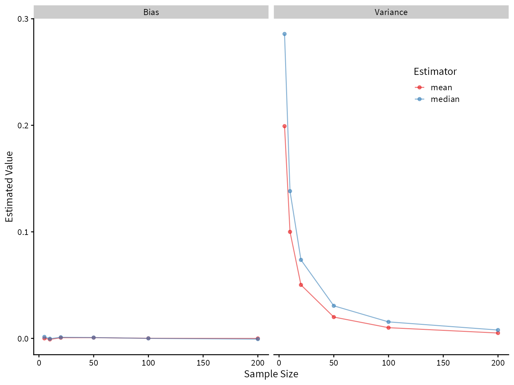
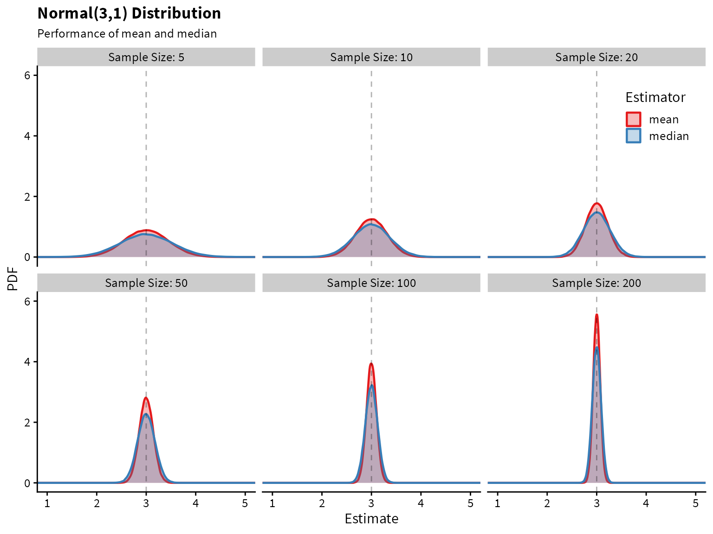

The sample mean and sample median are commonly used estimators for the center of distribution. There is no such thing as a “best estimator” in all circumstances. However, estimators can definitely outperform other estimators in terms of desirable properties (e.g., unbiasedness, low variance, consistency) given a particular circumstance. We can use simulation and mathematical theory to evaluate to performance of estimators given a set of assumptions. Here we focus on using simulation, with the help of tools from the tidyverse.
Scenario 1
We begin with a simple example. The true data generating process is
\[ X_1, X_2, \ldots X_n \stackrel{iid}{\sim} N(3,1) \]
How will the mean and median perform as estimators of center? Let’s use simulation to find out.
We will use a tibble to store all of our simulation results. First, let’s decide what sample sizes to simulate, and how many trials to run. The more trials we run, the more accurate our simulation results will be – the only cost being increased time to run the simulations.
Code
size <- c(5,10,20,50,100,200)
trial <- 1:1e5Now we use crossing() to generate a tibble that contains every combination of the vectors size and trial. So for every sample size, we are repeating it 100,000 times.
Code
df <- crossing(trial, size)| trial | size |
|---|---|
| 1 | 5 |
| 1 | 10 |
| 1 | 20 |
| 1 | 50 |
| 1 | 100 |
| 1 | 200 |
| 2 | 5 |
| 2 | 10 |
| 2 | 20 |
| 2 | 50 |
| 2 | 100 |
| 2 | 200 |
| 3 | 5 |
| 3 | 10 |
| 3 | 20 |
| 3 | 50 |
| 3 | 100 |
| 3 | 200 |
| 4 | 5 |
| 4 | 10 |
| 4 | 20 |
| 4 | 50 |
| 4 | 100 |
| 4 | 200 |
| 5 | 5 |
| 5 | 10 |
| 5 | 20 |
| 5 | 50 |
| 5 | 100 |
| 5 | 200 |
| 6 | 5 |
| 6 | 10 |
| 6 | 20 |
| 6 | 50 |
| 6 | 100 |
| 6 | 200 |
| 7 | 5 |
| 7 | 10 |
| 7 | 20 |
| 7 | 50 |
| 7 | 100 |
| 7 | 200 |
| 8 | 5 |
| 8 | 10 |
| 8 | 20 |
| 8 | 50 |
| 8 | 100 |
| 8 | 200 |
| 9 | 5 |
| 9 | 10 |
Now in each row, we want a unique sample of data with the sample size given by that row. We will use purrr::map() to do this.
The first argument to map is the vector to iterate over, and the second argument is the function to apply. We use .x as a dummy variable to refer to the value in the current iteration. In words, we are mapping each sample size to a random sample of size \(n\) from a normal distribution.
The new column, data, is a vector of lists, where each list contains a unique sample of data. Let’s see what this looks like.
| trial | size | data |
|---|---|---|
| 1 | 5 | 5.287247, 1.803228, 2.305707, 2.587707, 2.029327 |
| 1 | 10 | 2.052720, 3.748139, 2.883045, 3.152658, 5.189978, 3.356986, 5.716752, 5.281452, 3.324021, 4.896067 |
| 1 | 20 | 3.467681, 2.106199, 2.692672, 2.995178, 3.988164, 3.839750, 3.705342, 4.305965, 1.612004, 4.272917, 3.184193, 3.752280, 3.591745, 2.016947, 2.723936, 2.129149, 3.718711, 3.110653, 2.921533, 2.579510 |
| 1 | 50 | 2.437874, 3.997513, 1.894870, 2.857712, 3.314995, 4.218551, 2.300683, 2.714567, 1.688447, 2.608988, 2.598473, 4.350518, 3.591190, 3.100525, 3.931072, 2.737258, 2.992332, 3.367153, 4.707163, 3.723740, 3.481036, 1.432132, 3.318250, 3.165991, 2.100092, 3.076371, 3.159155, 3.543674, 3.704807, 3.318969, 4.109250, 3.769154, 4.153474, 4.260684, 3.700624, 3.432627, 2.077398, 2.384416, 2.133340, 1.360483, 1.674161, 2.110963, 2.442398, 2.937598, 5.422693, 3.342585, 3.004248, 3.029220, 2.606577, 2.207295 |
| 1 | 100 | 2.6882981, 2.6539314, 2.6953924, 1.2141065, 3.5872747, 4.6357944, 2.3545765, 3.6189922, 3.2363936, 3.8465009, 2.4263543, 4.1179932, 1.4599989, 2.5618761, 2.8493270, 3.5190584, 3.5875397, 2.9206669, 1.8256390, 3.3087221, 1.3961215, 3.9912896, 4.0232204, 3.8401454, 3.1200786, 2.5737449, 3.4589262, 3.6450479, 3.6115305, 2.1107887, 4.5438923, 1.7582364, 4.1034473, 3.9827724, 3.3043272, 1.4452818, 4.5698908, 3.6884497, 2.8223963, 3.7292013, 4.5332509, 3.5065784, 3.0333277, 1.5324493, 4.0191577, 2.4066607, 3.8124099, 3.8661678, 3.3683083, 4.1348191, 2.2429007, 3.4452206, 3.9159329, 3.2697587, 4.0075404, 1.5385667, 2.1252144, 3.1652289, 3.2072070, 3.4823619, 2.9283416, 2.1110716, 3.4859436, 3.3404968, 1.9020758, 2.6443056, 4.0973004, 2.0933080, 2.7925434, 3.6788614, 2.2022123, 1.4084611, 4.1803481, 4.2225693, 2.9890908, 3.3455225, 3.0941892, 3.0067934, 3.7426229, 4.0421865, 2.6806629, 3.3226434, 3.6850530, 3.3202428, 1.0850620, 0.6600371, 3.4828643, 4.1785300, 1.7072230, 3.6157731, 3.2560421, 3.7278390, 4.3241109, 3.1471585, 2.4014606, 5.1925299, 5.3271128, 4.1348696, 2.8091154, 3.4748446 |
| 1 | 200 | 2.45452506, 4.05564854, 3.42902183, 1.18004359, 2.30802391, 1.06817175, 4.20967201, 2.72099995, 1.90421677, 2.89781396, 3.35702296, 2.11769743, 2.94335221, 2.41898105, 3.64408819, 5.02334405, 3.86249250, 2.97509051, 3.60063495, 4.21648074, 1.82346845, 2.39065997, 3.38726257, 1.60085986, 4.23249185, 3.01550750, 1.37904095, 2.33453534, 2.42515949, 2.09810702, 4.49159937, 2.86272068, 3.10828170, 1.96478490, 2.55525608, 2.80395073, 1.73063551, 3.95352118, 3.47254665, 2.44122190, 4.24206456, 2.98474153, 2.20821161, 2.59838126, 1.10329871, 3.97197493, 2.48604514, 3.01456167, 2.73906443, 4.52235839, 1.52663025, 2.98344199, 3.02454061, 2.99874301, 2.56606729, 2.59444094, 3.15523332, 2.02761818, 4.54817493, 2.62987667, 4.96152526, 2.39000442, 2.92257124, 1.17114074, 3.80592424, 1.52240822, 0.02674429, 1.66023786, 2.73415797, 2.61600659, 2.39705767, 2.34847596, 4.75767151, 2.98096513, 3.15528461, 2.23915356, 1.45027309, 5.75016501, 4.04742325, 3.91799247, 3.47010951, 2.38262791, 3.04210627, 2.09810110, 4.33958321, 3.80385435, 3.31847865, 2.80954669, 1.91273331, 3.14539973, 5.46280025, 3.92361969, 3.74187669, 4.41602179, 4.25166337, 5.10890569, 3.71031260, 1.52481799, 2.41027352, 3.13970325, 2.48827577, 3.15093735, 3.44203940, 2.83760088, 3.97183854, 2.32873452, 4.63839716, 1.93172732, 2.98858788, 1.13471866, 3.01825086, 2.75297945, 2.08057489, 0.82683557, 2.35062295, 3.52526155, 2.72427269, 3.05470977, 2.61175039, 2.58297695, 1.83582483, 4.73786414, 2.74592265, 2.02628138, 4.11119895, 3.97349906, 4.25712868, 4.77628758, 0.31683148, 3.65986308, 4.17944967, 3.39351378, 1.81014133, 2.64347263, 1.53449196, 1.90926985, 2.34274578, 5.26294100, 3.08769003, 3.76752300, 2.38684254, 3.15250297, 2.40829255, 2.03929503, 2.41504201, 3.65667289, 2.70975041, 3.90409773, 3.19902022, 2.94842519, 2.09179482, 1.85752166, 3.99032494, 3.11227328, 4.14963167, 2.08950468, 1.89618028, 1.36513269, 1.38361751, 2.16326299, 4.09299912, 4.23509818, 3.17206660, 3.12049317, 3.55753267, 3.49138316, 2.93098738, 1.64920369, 3.79935757, 2.67990592, 2.64304881, 2.48927206, 1.12111992, 2.04815491, 5.27315661, 3.20268763, 0.69144530, 2.94336434, 3.06284384, 3.71022814, 2.40769260, 3.29852463, 3.64253563, 5.11279510, 3.91777963, 1.42714525, 3.99264173, 3.47952087, 2.70341944, 3.81584023, 2.00022839, 3.54921029, 3.27977120, 3.91663589, 1.26874274, 1.52041893, 5.22981103, 3.38649895, 3.66026569, 2.72376479 |
| 2 | 5 | 3.2759330, 0.7257688, 3.9080857, 1.9137469, 2.7844733 |
| 2 | 10 | 2.266573, 3.212118, 2.060858, 2.380806, 3.244011, 3.371743, 3.627208, 1.926886, 2.291307, 3.907132 |
| 2 | 20 | 2.6802944, 4.1650659, 2.3782895, 4.2482132, 4.4404015, 3.7619934, 3.5593712, 4.5992638, 2.9015423, 1.5504462, 2.7423387, 0.9669287, 3.5869642, 3.1605865, 3.1131529, 3.5716906, 2.0344703, 3.3180012, 2.8264924, 2.0873888 |
| 2 | 50 | 1.153105, 3.669518, 2.891213, 4.566575, 2.155155, 4.097649, 3.300880, 2.223034, 2.961566, 4.109490, 3.536325, 2.636652, 2.894499, 3.333875, 3.810231, 1.316305, 3.665728, 2.207612, 4.527723, 1.513308, 2.328851, 4.675177, 3.611932, 2.767794, 3.605293, 1.840894, 1.835571, 2.130075, 2.738894, 2.505804, 1.694177, 5.023413, 2.244351, 2.758405, 4.097159, 2.053387, 1.866040, 2.116616, 3.516413, 2.662045, 2.977548, 2.897949, 3.300409, 3.806620, 2.962794, 1.543524, 2.376109, 2.830402, 4.276123, 2.744086 |
| 2 | 100 | 2.8346317, 2.5726789, 2.9431273, 1.5546164, 4.8828070, 3.1168900, 3.4211327, 4.5774044, 2.7486115, 2.9443757, 2.9774681, 5.3309610, 2.9011697, 3.1664316, 2.7303646, 3.8444736, 4.4087677, 1.4337638, 3.1690382, 1.4943208, 3.9949329, 4.2439084, 2.9637432, 2.5887441, 4.2841490, 1.8821923, 2.1649303, 4.5008117, 3.8991509, 2.5435879, 2.7939842, 2.4121564, 2.3145471, 4.0048242, 2.2273509, 1.0062663, 2.0907455, 2.4368439, 1.7821444, 1.1796821, 2.6003707, 5.1183683, 4.4151575, 3.5647651, 1.9187028, 2.0580239, 2.7558166, 4.0854886, 3.5583438, 0.8237716, 3.8773012, 3.8425353, 2.9484160, 2.3098786, 1.1610172, 3.2830379, 0.7474099, 3.7343502, 3.1458057, 2.3505714, 2.4387756, 3.3347920, 3.0320184, 4.2369172, 3.0564134, 2.8545673, 2.4076504, 1.7392870, 2.3163942, 2.8365628, 2.5615265, 2.4212970, 4.5810904, 4.5406613, 3.7029810, 2.9362514, 2.2593760, 1.9660528, 2.7039363, 1.5570503, 2.9728083, 4.5613930, 2.0089218, 3.0041940, 2.9551952, 2.3113463, 2.8697454, 3.1550928, 4.2773416, 4.0535482, 2.6282835, 2.8968675, 5.4980736, 2.2227391, 3.7573846, 3.0225450, 1.3499685, 2.1108838, 2.3916303, 2.7869371 |
| 2 | 200 | 4.4712113, 3.4663885, 4.8183584, 4.9233962, 2.4609964, 2.6137212, 2.1381923, 2.5979934, 3.5989628, 3.0818373, 3.3310258, 2.5387531, 3.3590392, 2.4842088, 3.5872762, 4.6196110, 3.4452312, 4.2552612, 2.4250934, 3.3160895, 0.8121294, 5.3721013, 3.9765799, 3.6144518, 2.6847373, 3.2310379, 5.0754801, 3.6526849, 2.9626037, 2.2936085, 1.7721683, 3.1341585, 2.6267665, 3.0390604, 3.1431243, 3.1049473, 3.6021957, 2.8816045, 3.5591695, 3.0418614, 3.0636211, 4.4662037, 2.5273691, 3.1634745, 3.3063502, 3.7925762, 2.0509232, 3.9047870, 2.6598896, 4.5310075, 3.3894034, 3.4959820, 3.6448587, 2.9562352, 1.6431313, 3.5914394, 1.0117028, 3.9186111, 2.2712175, 2.7793923, 3.3043540, 3.9926521, 2.9267322, 2.9882560, 4.0048726, 3.2533434, 2.0013965, 2.1985930, 4.1808544, 3.8229147, 3.9488901, 1.7478035, 1.4130252, 2.9784231, 1.8325981, 2.4516226, 1.9588791, 3.0147900, 1.4106007, 1.8228845, 3.7860374, 4.8980149, 2.5862019, 3.6776653, 2.1427547, 2.8789413, 2.2828294, 2.5392775, 2.9459693, 4.8482138, 3.5799736, 3.0891623, 3.9692474, 4.0389265, 2.3749993, 2.9423099, 2.1560368, 3.1875532, 2.5682157, 1.1942029, 2.8283227, 2.2625034, 2.9965397, 2.9206258, 2.8040684, 1.3295267, 2.0698512, 2.2467431, 2.8882962, 2.5293070, 2.1340760, 1.4287556, 3.5310695, 2.6139270, 1.5563502, 4.0796788, 3.3756376, 2.0071300, 4.0982031, 2.3521521, 2.9948101, 2.8644936, 4.2993083, 1.0984440, 4.2119189, 2.4081217, 3.3380150, 4.4366194, 3.4033307, 2.2535110, 4.3431232, 2.8146054, 3.9726011, 3.9211635, 2.9477696, 1.5649822, 4.0510527, 5.2405947, 3.7003835, 1.8269189, 2.5049930, 3.2786766, 3.7157131, 0.8367070, 2.5479963, 2.0247102, 2.4633039, 3.3083875, 3.4217938, 3.4386619, 2.0136053, 2.3334876, 3.2542884, 2.1949325, 3.3629507, 3.7519038, 2.0610404, 2.6878049, 2.9188225, 3.6210392, 3.3736386, 2.5762633, 2.7108783, 2.6170364, 3.9187120, 4.0170490, 3.6795118, 4.3614973, 2.7761955, 3.6014453, 2.8579245, 3.6139005, 4.0570122, 5.9614931, 3.6459387, 3.3482272, 1.9481373, 3.4999391, 2.8656461, 1.7816658, 4.9838025, 1.2559068, 3.3220384, 1.0206524, 3.7251298, 2.6158280, 2.9391138, 1.5464312, 3.1089980, 2.8583717, 4.5959384, 4.4549930, 2.9315214, 2.6788520, 2.9814002, 1.6783025, 2.7422002, 3.4730513, 3.9221774, 2.1461390 |
| 3 | 5 | 1.0747243, 4.5615640, 1.9949502, 2.5591799, 0.8516282 |
| 3 | 10 | 3.048287, 2.778905, 2.673316, 3.400211, 1.967065, 1.463854, 4.601259, 3.387260, 3.895125, 3.499271 |
| 3 | 20 | 2.4285227, 2.3395377, 2.7488436, 3.2524397, 3.2276578, 3.2738653, 4.0710747, 2.7178398, 0.6195107, 3.5952696, 2.9578908, 3.6323426, 4.1449626, 1.9183443, 3.0223513, 3.1286965, 2.4501342, 1.6139560, 2.8583713, 2.0375426 |
| 3 | 50 | 3.8046061, 1.7389417, 2.4324046, 2.4069112, 2.3684307, 3.9753758, 3.7230437, 3.7287052, 4.6498268, 3.6135468, 4.0717187, 3.9209338, 2.6941869, 2.9706652, 2.9164413, 2.8974315, 1.9216091, 3.9951739, 3.8619505, 2.3248371, 2.6893307, 2.3994889, 1.9630793, 4.1066661, 3.1823144, 3.0297148, 3.4639882, 2.7645436, 2.5417248, 1.5961892, 3.0482292, 2.5052983, 3.1519455, 2.7919992, 3.0458618, 4.9481276, 2.8886585, 2.0411453, 2.2232450, 3.0789227, 1.5290028, 2.6367495, 1.9999055, 3.5540651, 4.9393684, 2.5539007, 3.6313644, 0.3785456, 3.2908147, 1.9487786 |
| 3 | 100 | 4.0267448, 2.4347065, 3.0706354, 1.8619552, 2.1051051, 2.4159778, 2.2276860, 3.2198606, 4.2963880, 4.1106416, 2.3727025, 4.6175100, 3.7231870, 3.3952936, 1.9038731, 3.9842807, 2.1291319, 0.7617531, 3.9220697, 2.2509084, 3.6855175, 5.0565703, 1.9029950, 2.5308079, 3.1848184, 1.6005643, 3.0330627, 3.0296827, 2.1690749, 3.0171374, 2.3909994, 1.4421590, 2.8371608, 2.7534749, 2.8547618, 3.5765834, 0.5694954, 1.1923891, 2.7431577, 2.1169319, 1.9697289, 1.4216196, 2.9587375, 4.5703574, 1.2041289, 1.9937968, 2.9218875, 1.5531351, 3.1154095, 1.7936482, 4.9214755, 2.8949295, 2.5121010, 1.7239873, 1.7129663, 1.6588592, 3.3965378, 3.5308406, 2.1060778, 4.0638238, 2.9288794, 1.0274889, 3.8229956, 2.9489243, 4.6103621, 2.8593775, 3.5027458, 2.3368797, 3.9059765, 3.3097038, 2.9642133, 4.1090774, 3.3954192, 2.1599487, 4.1834967, 3.1524552, 4.5397408, 3.5094389, 3.0603497, 2.7083975, 4.3067560, 3.0184312, 2.4475454, 2.7512634, 3.5456570, 3.2623655, 3.1965461, 4.4158751, 2.4468998, 3.4643230, 2.4960860, 3.2934396, 2.2344831, 5.9669187, 2.5541070, 2.6097323, 2.8106454, 3.9297801, 1.5020411, 2.7621832 |
| 3 | 200 | 3.3379816, 3.0467376, 3.5856568, 4.6881144, 2.9882412, 3.8726926, 4.9507921, 2.2179698, 3.1656292, 3.0616127, 2.9423149, 2.0744901, 2.6901850, 2.9727262, 4.0697656, 2.6710079, 1.8654389, 2.8375546, 1.8670523, 3.3272469, 1.8216279, 4.0887857, 3.7945111, 3.2769436, 4.1882102, 2.0985893, 4.1767634, 2.3121987, 2.9017401, 0.6995816, 2.6310833, 2.1461711, 2.5735019, 2.6055313, 2.3392725, 3.5565659, 4.2165840, 2.4282726, 1.3777620, 3.9605101, 3.3559599, 2.7266119, 4.4954292, 1.1048459, 4.3405233, 4.2465863, 2.2344911, 3.2161769, 2.6356327, 2.1793273, 3.5823607, 1.7455905, 1.4644593, 2.3608079, 3.9028003, 1.0813524, 2.9920942, 3.7360488, 3.8347558, 4.2006599, 2.0251797, 3.1578320, 3.6828930, 3.4354898, 3.6446918, 4.2536940, 3.4351071, 3.6951262, 3.3481487, 3.4263386, 3.9004165, 2.7830213, 3.4770821, 4.4557338, 2.3610055, 2.0883887, 2.1229056, 3.4073771, 1.2205407, 3.7718883, 2.9473680, 1.9577641, 2.6836830, 1.9353318, 2.7912719, 2.4061728, 1.4001696, 4.7920980, 2.7025164, 2.0886113, 3.5193641, 3.4665924, 3.7529639, 3.3625808, 3.6445837, 4.8089620, 2.5149883, 4.7129001, 2.6400966, 2.7897778, 3.8286028, 2.2471501, 3.1699194, 2.4675223, 1.2139572, 2.0048085, 4.2639231, 3.3735465, 2.8712022, 1.3690783, 1.2301025, 1.8408825, 2.4633109, 2.5279638, 2.2077192, 3.3804254, 2.2987340, 0.9632190, 2.0159687, 3.5687473, 2.4107160, 2.6069591, 2.3379330, 2.2647634, 4.7508700, 2.1508180, 4.8035604, 2.9215948, 1.8838999, 2.9627230, 1.3184766, 3.0004679, 2.7376545, 3.8483555, 3.1799709, 2.9088631, 2.8585798, 3.4850146, 2.7303344, 2.0311355, 1.8765016, 6.1393687, 2.0304541, 1.1624620, 1.7204242, 5.1641666, 5.4209916, 5.2109649, 3.9116650, 3.8978615, 2.2806115, 2.2426713, 1.1898476, 2.3905190, 2.7221135, 2.5300610, 3.6211107, 4.5201590, 3.9518112, 2.4877154, 3.9611690, 1.5032409, 2.7716587, 2.0895720, 3.9192839, 3.8641317, 2.6356586, 3.5662045, 2.1490408, 3.2971417, 3.2662161, 1.7114598, 3.7481715, 2.5776729, 1.2499376, 3.9234398, 2.1178963, 3.5202904, 2.6368864, 3.5266851, 4.3277226, 4.1275526, 3.9812273, 2.9276576, 5.0384100, 2.7966574, 1.7282428, 2.5984431, 2.6102377, 2.5112881, 2.4589464, 2.0001536, 3.1825102, 3.4826075, 3.9767062, 2.3317354, 2.8121231, 4.6023773, 3.8168615, 1.9140217 |
| 4 | 5 | 2.577562, 1.123664, 3.495275, 2.719760, 4.720884 |
| 4 | 10 | 2.702431, 4.166489, 2.750906, 4.090724, 2.774019, 2.651594, 3.167391, 1.799999, 2.749191, 3.163844 |
| 4 | 20 | 2.8900482, 3.4663823, 2.3946123, 1.1266935, 3.3379802, 4.0589477, 4.2738963, 3.5974829, 5.8015042, 3.4725719, 1.6463334, 2.9543077, 2.1672539, 3.2862271, 4.4010676, 0.9028631, 3.1765408, 3.5989289, 2.2799673, 3.1030414 |
| 4 | 50 | 2.5417992, 2.7712643, 3.2603008, 1.5902826, 2.4041137, 2.6021900, 2.1068297, 4.2283983, 1.3692486, 2.9955652, 3.4650244, 3.1077124, 2.5326740, 5.6138886, 3.0343272, 4.3560290, 1.9652125, 3.0990213, 1.5725810, 1.5456695, 1.6319697, 2.3603026, 1.2883407, 3.5445709, 3.2687218, 0.8946275, 3.0903373, 2.5934762, 2.5560058, 3.7752356, 3.4707229, 2.5997251, 3.3855622, 3.8563913, 3.3555159, 3.0903885, 4.5548858, 1.8718650, 2.3247428, 3.0633230, 2.3958766, 3.5463976, 3.2704150, 2.0239806, 2.8522347, 1.7801888, 2.9331158, 3.5143356, 3.1246447, 1.8767593 |
| 4 | 100 | 3.0181795, 3.1820159, 2.8390711, 3.9013929, 2.9089998, 2.3781238, 2.9665397, 2.0201009, 3.0919985, 3.8296835, 2.3138039, 4.3592009, 3.5122567, 1.2843327, 0.8425531, 3.6482090, 1.1299042, 3.2927918, 3.1919376, 3.6177099, 3.6207109, 5.0441964, 2.0670874, 2.5374294, 3.2004210, 1.6477960, 2.1863851, 2.4497617, 3.6312731, 3.6447851, 0.6144123, 3.4086673, 3.1185903, 3.6694021, 1.7242021, 2.6752880, 5.1434517, 3.0748484, 2.9999282, 4.5485503, 2.9316575, 3.3015455, 4.2693085, 1.6217036, 2.4394224, 4.2841995, 3.8561266, 2.8120557, 5.8017036, 3.3899501, 3.3749675, 3.6431217, 1.0892514, 3.6225169, 2.8967333, 4.3033562, 3.5743987, 3.4982402, 3.1149025, 2.3937729, 4.3760731, 4.7448725, 2.1975521, 3.5528219, 2.1416862, 3.2485131, 4.4099829, 2.7861281, 2.5234690, 3.4944403, 1.8494273, 2.8579902, 2.9158367, 2.1895905, 3.5870681, 3.0879314, 4.0345519, 2.0506254, 4.8413177, 2.7391807, 2.5804362, 2.6821090, 3.3549040, 4.5469212, 1.9058571, 3.6630682, 1.8668980, 1.7935556, 3.0096299, 2.1824717, 2.3973071, 1.9284134, 2.5119362, 2.8627759, 1.2537074, 4.7452578, 1.6890902, 4.7486918, 3.2425947, 4.2115684 |
| 4 | 200 | 1.7163342, 3.3961512, 3.3508282, 2.5039774, 4.6840417, 1.7388718, 2.4119315, 2.8617928, 2.0973344, 2.1290068, 3.0838036, 1.9595181, 2.4239329, 2.2075452, 2.5775338, 3.3921317, 0.3204456, 3.4629006, 3.3416441, 2.6480426, 2.3242814, 2.3658204, 2.1976661, 3.0677451, 2.6734496, 2.9459689, 3.2758985, 2.5727472, 5.6979733, 4.4121483, 3.0515411, 3.5657808, 2.2442798, 2.8411756, 2.1189565, 1.9452891, 4.0218776, 5.2161058, 3.9068794, 2.0692046, 3.7466105, 0.9048727, 3.0184510, 4.7313734, 3.8866503, 1.3898996, 4.2114470, 3.1818671, 3.6175192, 3.0604298, 2.1619366, 0.9402405, 3.6955505, 3.0629654, 2.3677511, 1.1087315, 4.3015642, 3.9787920, 4.7858164, 3.3748548, 3.9135828, 3.6184084, 4.1628526, 4.6338721, 2.4531146, 3.8241168, 1.8725589, 1.7221809, 1.7535746, 0.9253364, 3.6569145, 3.4339670, 3.5715451, 4.6249207, 4.6819166, 4.2661941, 1.2672861, 1.9829952, 2.3027015, 2.2311619, 3.1796823, 3.0096723, 2.7324376, 2.4350636, 3.3580408, 2.3852859, 4.2023372, 4.2472032, 3.9590326, 2.5610634, 3.1149327, 3.8371374, 3.2669376, 1.7471463, 5.1862870, 1.9557388, 2.1586536, 2.4014890, 4.2447406, 3.3300805, 1.9529079, 3.8841227, 3.5972757, 3.2476957, 2.6679333, 4.2667915, 3.2644636, 1.3508051, 2.6746331, 2.9296305, 2.1811953, 2.3909156, 2.6666524, 1.3167173, 1.7220197, 4.0457457, 2.8216641, 3.9428210, 3.2624007, 4.6230240, 3.2122163, 2.3820006, 2.0584235, 2.3835105, 2.0552709, 1.8885412, 1.8576204, 3.4357655, 3.1843560, 2.8095216, 2.8899896, 5.7854697, 3.5817640, 1.0424798, 3.8083765, 2.1554346, 4.2815605, 4.4691496, 3.0988933, 0.8793161, 1.6357474, 2.0181340, 3.3496876, 3.5091329, 1.3825665, 3.7306101, 3.6229595, 4.9544289, 3.4510336, 2.1901128, 3.5817777, 2.5769730, 2.3174844, 2.7497388, 3.5184649, 4.5784404, 1.6337282, 4.4608322, 3.4271655, 3.4710742, 2.2471736, 2.7938811, 2.7958883, 2.3072717, 3.4583664, -0.1945934, 1.6988172, 4.0357038, 1.6414525, 3.5970889, 4.2535352, 3.2422433, 1.6789045, 3.1877825, 4.6130923, 4.3407352, 5.3869467, 2.2066576, 3.4598220, 2.7061118, 1.1128346, 2.8470241, 2.5815477, 5.0300598, 3.1588658, 3.6022633, 3.7555937, 2.0517514, 2.2354213, 4.0315750, 3.2004044, 5.0633260, 2.8667188, 4.1450519, 3.4346506, 2.4464445, 3.2140254, 3.4815925, 2.8929998, 3.3238329 |
| 5 | 5 | 3.514865, 2.496826, 2.801990, 3.761042, 2.422648 |
| 5 | 10 | 3.756337, 1.923437, 3.789760, 3.183596, 2.608614, 2.016464, 3.184548, 3.021970, 1.259288, 1.951281 |
| 5 | 20 | 2.9097301, 3.0219521, 4.7241506, 0.9865961, 3.4510194, 4.3233036, 2.0723322, 3.2131797, 2.9451123, 3.4573549, 3.4901806, 3.1804193, 4.4008089, 3.9546714, 3.8411374, 2.4584639, 2.7913580, 1.9523230, 2.3558973, 1.2346920 |
| 5 | 50 | 1.8693174, 1.3874648, 2.4247317, 3.4950936, 3.3662180, 3.2931491, 1.0974698, 2.3823370, 2.5463785, 2.4985596, 2.6719120, 1.5921060, 2.4032878, 2.8700023, 1.8612895, 3.4592015, 3.2726076, 4.1352622, 3.7015904, 4.8641803, 5.2862061, 3.5934848, 0.8537222, 3.1169678, 2.5454646, 4.8389320, 1.7696851, 1.0894155, 3.1326362, 3.6771295, 3.0446510, 4.1009060, 1.6938610, 3.1493007, 2.9353110, 3.9367239, 2.1000665, 3.9920757, 3.8064688, 3.3679839, 2.0282479, 4.0487172, 4.5154800, 3.9712420, 3.4977031, 2.4862756, 3.1832053, 3.0918959, 3.5357808, 1.3586022 |
| 5 | 100 | 3.5424784, 2.0505024, 1.8633141, 3.0459469, 3.8863753, 3.8110386, 2.4724735, 4.7324698, 4.3112077, 3.6825551, 4.0815016, 3.3063481, 2.4136442, 0.7581959, 4.8549243, 5.0943299, 2.7013019, 3.9355892, 2.7912487, 2.9668488, 4.1837299, 3.6562594, 2.6428732, 3.7113550, 3.7843589, 1.4346608, 4.3218130, 3.7581246, 2.0149076, 4.5247611, 3.6655657, 4.6137878, 4.4868591, 3.1043702, 2.9634153, 1.4831930, 3.3426438, 3.8861776, 2.1428865, 2.9647870, 2.8190044, 3.8773118, 3.1905786, 3.1496487, 3.0526628, 4.0249087, 4.5536669, 4.2838408, 3.1792383, 1.7031621, 3.4835810, 2.9739982, 2.9276736, 5.2791639, 3.0489454, 1.3798501, 4.1954034, 5.6661265, 2.0271300, 3.7062196, 3.2020413, 4.6488792, 3.4152248, 1.0550391, 3.4885526, 3.5886434, 0.6166773, 1.9883347, 1.9547028, 4.2378245, 1.7442482, 3.2433926, 2.8784131, 3.4218840, 2.3546276, 1.6379401, 3.8878428, 2.3668499, 2.4401547, 3.2486133, 2.5946249, 2.8803422, 1.1745238, 2.4222402, 5.7571769, 4.0906538, 3.0743054, 2.4457229, 1.1607396, 1.9188096, 3.3181694, 2.1005772, 3.5603829, 2.3327544, 3.0513151, 3.2026628, 1.1171509, 2.6334994, 2.3845380, 2.8517136 |
| 5 | 200 | 2.3691409, 3.4615946, 1.7034097, 3.8446770, 3.3788525, 2.5161311, 3.0601320, 2.6740266, 3.4011137, 3.2903042, 3.2208011, 2.6912329, 2.8030961, 3.9755343, 2.2583128, 3.3659178, 1.6021431, 2.3799385, 4.3964791, 3.4188935, 2.6022612, 5.0251028, 2.5178152, 2.4181548, 2.2068815, 2.9168703, 3.4858629, 1.9074054, 1.5857885, 1.9761283, 4.2175867, 1.9600418, 0.6046258, 4.8618001, 3.4691953, 2.3503606, 4.1447430, 5.7604490, 2.9300919, 3.2584400, 2.9584763, 2.4588975, 4.7161840, 3.7600893, 1.8619573, 5.4472258, 1.7400079, 2.0191090, 3.0246035, 2.1033006, 4.6466718, 2.5521770, 4.2960654, 3.4080009, 3.3533659, 2.8535206, 3.4385118, 4.0051471, 3.6213592, 3.4094595, 2.7294048, 3.6628972, 1.9368317, 3.5092563, 4.5947008, 3.9618350, 2.1556249, 4.3007900, 2.8813826, 1.8816738, 1.3386454, 6.3746072, 1.6590831, 4.4208116, 3.5253409, 2.8741180, 2.5143414, 4.9964187, 4.0583367, 1.4428591, 1.5203614, 3.4129872, 3.0954934, 2.3484448, 3.3086262, 1.4415215, 3.3522097, 2.6828391, 3.4159518, 2.6343277, 2.8466694, 3.2500697, 3.1326945, 3.4400181, 3.1703828, 3.0501787, 1.8949111, 2.7663220, 4.0244025, 1.7474825, 2.7420869, 1.6420272, 1.8689042, 1.3411184, 2.0706502, 2.7942048, 3.6074724, 3.2685829, 3.8684910, 2.9417292, 3.0966923, 2.8299410, 2.7796743, 5.0701974, 2.4673680, 4.0838314, 3.3772170, 3.6957740, 4.0460294, 3.0329907, 3.5152334, 2.5278588, 2.3032073, 3.3088646, 3.6086187, 1.9449031, 1.4157414, 3.4262543, 3.5989979, 2.4981296, 1.7890128, 2.5558775, 3.1916534, 1.7464104, 1.8832654, 1.8176307, 2.2890291, 3.5064925, 2.8573236, 2.7160779, 3.5948585, 2.0893778, 2.8218961, 2.6022226, 3.6518425, 1.0204207, 3.3041408, 3.4402804, 2.1370093, 2.5823706, 2.8565004, 3.3906351, 3.1892806, 5.5506602, 2.6788334, 3.6253295, 3.5511321, 4.2413080, 0.7796717, 3.3006978, 3.1480750, 2.6231278, 4.2488419, 2.7868702, 4.1495839, 1.8637552, 5.2001700, 3.5546161, 1.7720770, 5.3480437, 3.9494513, 3.2701568, 3.4696585, 1.3766217, 2.3362123, 1.8086222, 2.2765193, 2.8778630, 2.5693908, 3.8506205, 1.9431600, 2.7628165, 1.9862709, 0.9097608, 2.1427446, 2.9710050, 3.1817432, 3.4420271, 3.5908294, 3.5504166, 3.0735125, 3.5175857, 4.4743472, 3.3671130, 1.6079031, 3.5726268, 1.5246917, 4.8732109, 3.3546180, 3.8230656 |
| 6 | 5 | 3.857373, 2.135439, 2.549427, 3.124880, 3.923581 |
| 6 | 10 | 3.555057, 2.391047, 2.101682, 3.550571, 3.830792, 2.925424, 2.152222, 1.900046, 3.167900, 1.282918 |
| 6 | 20 | 3.041673, 3.708679, 2.381326, 2.585394, 3.673748, 1.110732, 4.434646, 4.392041, 4.760111, 3.742157, 4.011191, 2.169924, 6.496940, 3.118313, 3.804739, 3.412177, 4.373924, 4.067338, 2.187535, 3.476876 |
| 6 | 50 | 2.5507814, 2.6063936, 1.9032402, 4.2744637, 3.2747231, 3.8835118, 4.5999724, 3.2905748, 1.4572807, 3.9056976, 2.4495930, 3.1111760, 2.9284150, 2.9267990, 4.0788316, 3.2560531, 2.9131466, 4.2787633, 1.2036267, 5.3668441, 3.0635793, 2.6414494, 2.8589586, 1.1310532, 1.1869943, 3.6448590, 4.5758476, 3.2058853, 3.3991010, 2.4822593, 3.4123530, 2.5828400, 2.6104294, 4.7817712, 2.0663930, 3.4439450, 3.9798415, 3.2494025, 4.1117989, 2.4338673, 4.4147485, 0.8966689, 1.9163127, 2.6296617, 3.7557620, 3.1780450, 2.4464562, 3.2271041, 2.7577385, 2.5863799 |
| 6 | 100 | 1.88036700, 3.18995020, 2.33567147, 4.56672842, 5.19368825, 2.74883812, 1.77813018, 2.90380790, 2.84134585, 2.71707709, 4.31642096, 3.79102943, 3.87306285, 2.49468390, 2.41043714, 3.72222256, 3.21424043, 3.55826858, 2.81380430, 2.15266543, 2.92101825, 2.65847972, 4.77441108, 3.18740687, 3.55116916, 2.73364600, 2.17379976, 2.52746495, 3.33945925, 3.18619578, 2.08134671, 2.39989650, 3.10689523, 2.97211557, 3.80512905, 2.47755793, 2.97351029, 3.84192196, 3.04488051, 2.34798681, 1.68988550, 1.75210264, 2.79047888, 2.40423433, 5.69600943, 2.72813956, 4.63693884, 3.00496511, 4.23260031, 1.98329434, 3.02372716, 5.78390206, 3.33907851, 3.90692718, 3.34391587, 3.50614930, 3.44067939, 2.53789933, 2.56546891, 1.03713060, 1.43841424, 2.73361850, 4.34557457, 2.28573575, 2.67216023, 2.80083419, 2.69108069, 3.59733902, 2.33784719, 4.47821478, 4.31051453, 3.27727002, 3.19013359, 3.79863407, 2.24020070, 3.08047949, 3.44211882, 1.76077295, 3.87350055, 1.72994952, 3.22493598, 5.74926815, 2.31161776, 3.21744615, 0.60950803, 2.14040439, 0.09879768, 2.69490906, 1.05943355, 2.31556712, 3.59230792, 2.19066034, 3.84950618, 2.80766425, 4.10376975, 2.28061753, 2.27684385, 3.47012960, 2.70449904, 2.58926283 |
| 6 | 200 | 3.73393329, 4.68196047, 3.64325675, 3.38147222, 2.51971566, 2.36701571, 2.71963295, 1.15672614, 2.17739123, 2.14946534, 3.97350957, 2.98711065, 2.73079874, 1.82297369, 4.35013905, 3.60816632, 4.55619993, 1.78702322, 2.22092560, 0.43270367, 2.98802401, 3.11237069, 2.23664950, 2.74652381, 3.41524924, 2.38601039, 2.97091854, 4.35370083, 4.09870622, 1.74659366, 3.04344846, 2.01006233, 2.53259370, 3.22792113, 4.37762086, 2.56183660, 3.01990414, 2.60548567, 2.96478221, 3.34433772, 1.85243003, 3.43334990, 1.84067901, 3.61316438, 4.37424823, 4.18144289, 3.96137430, 2.74981234, 2.78974238, 2.63399257, 3.22923034, 3.05290728, 4.91081981, 3.10937495, 1.82106407, 3.91344770, 1.02027853, 3.72813495, 2.87567883, 4.72912786, 3.45886701, 1.99363258, 4.40655133, 2.30079335, 3.62468616, 2.57851175, 3.60042348, 2.03007923, 1.75979193, 2.98490262, 1.29805931, 4.53300389, 2.82521406, 3.53397548, 5.32988324, 3.65968743, 2.03139726, 3.26467763, 1.96499055, 2.83128222, 3.54680969, 1.39305789, 5.23215675, 3.02787641, 3.94303841, 3.21542923, 1.89890499, 4.11185116, 1.85174474, 3.80790487, 2.62606129, 4.33940552, 3.81346139, 4.39377419, 3.02015856, 4.44280058, 4.13330739, 1.46962213, 3.98108916, 1.88317315, 3.41367576, 2.95271163, 2.65869230, 3.27657763, 3.99003778, 2.08371230, 1.95819902, 2.35579112, 3.44209611, 2.55864563, 3.53627879, 2.62675394, 3.93140188, 2.64470865, 3.02819799, 2.60983467, 2.90294980, 1.70860190, 0.13900450, 2.89737081, 2.68349411, 2.34608860, 1.87396303, 0.56338643, 2.60797501, 4.67863694, 2.53089725, 1.48783173, 2.20996177, 1.70537898, 1.82158893, 0.21932804, 4.86740343, 3.28165845, 2.22419358, 5.10198865, 3.38164896, 4.49053601, 3.35728354, 5.06007863, 3.60383910, 3.70706370, 3.83450625, 3.83582815, 1.92917204, 3.15368483, 3.74788808, 3.39659320, 2.67780991, 0.79726743, 3.19241453, 3.15041461, 3.65420665, 3.05019117, 1.88303933, 2.64342340, 1.56478318, 3.57935339, 2.61036033, 2.04544074, 3.02541011, 2.48550983, 3.93567809, 3.31990557, 1.94808952, 4.59650913, 5.48889291, 2.64809477, 3.27752415, 4.76266995, 3.17105275, 2.75527776, 2.54738982, 4.20886579, 3.19294879, 2.17824609, 2.72281982, 4.06718120, 4.07408325, 0.08067596, 4.04741184, 2.69277374, 2.61910689, 3.98210490, 2.59207901, 1.79527185, 2.69231860, 3.22060487, 2.51963125, 1.45218253, 3.23496708, 1.43878066, 2.75476689, 2.71199756, 4.51966528, 4.57833378, 2.58049385, 4.21498055, 1.09504235, 1.13872264 |
| 7 | 5 | 1.784439, 3.425535, 2.607335, 2.290123, 3.700212 |
| 7 | 10 | 2.281392, 4.148653, 3.270487, 3.337361, 2.654422, 3.692596, 2.109511, 1.995323, 3.338848, 3.269357 |
| 7 | 20 | 1.8538786, 3.3201825, 1.5001087, 3.1003889, 1.7052349, 0.7408349, 3.9399591, 3.2533202, 2.3022738, 3.4578910, 4.8238340, 3.7144290, 3.9670851, 1.2297934, 1.8101826, 2.1634817, 2.4122741, 2.4489576, 3.4778975, 3.7623009 |
| 7 | 50 | 2.274531, 1.012113, 4.158104, 2.941542, 3.725134, 1.706992, 3.821471, 4.820068, 3.497656, 2.449385, 1.649862, 3.405322, 2.374651, 3.315736, 2.388509, 2.974580, 1.411078, 3.124356, 3.231405, 3.118886, 3.193474, 3.239365, 1.234845, 4.723001, 2.161363, 3.833976, 2.109167, 2.491098, 3.345267, 3.895823, 2.914802, 3.054682, 3.371297, 2.850672, 2.912230, 3.074439, 3.188087, 3.692086, 1.912902, 2.764625, 2.987699, 2.594962, 3.112898, 3.762646, 3.543479, 3.670860, 3.107984, 1.649068, 3.144848, 4.697430 |
| 7 | 100 | 2.6815533, 4.5553995, 2.9717382, 4.3238734, 0.9177539, 3.1547203, 2.4644775, 2.0413514, 4.1958137, 2.7723466, 4.5121933, 2.7179832, 2.2150723, 2.3375132, 0.5325480, 5.4723348, 3.6104933, 3.7027587, 3.3242890, 4.4716504, 3.3487155, 2.7000826, 1.7707555, 2.2652691, 3.3547820, 2.9780414, 4.0629846, 3.2797300, 2.0127410, 2.8648111, 2.9592843, 3.9684700, 3.3496193, 3.3114045, 2.7583088, 2.2310100, 2.2540417, 4.8417704, 3.0492012, 2.8494407, 4.1653644, 3.8157019, 3.6837652, 1.8991152, 3.9288021, 3.6607297, 4.3828736, 2.9162287, 2.1809123, 4.6346291, 3.4808300, 3.1424640, 0.9080187, 2.6660833, 1.0264960, 2.5813904, 2.8263098, 3.8828336, 3.0852200, 2.2999384, 3.7738867, 3.4649387, 2.1735458, 3.6290068, 4.3639401, 3.5808685, 3.5629061, 3.3783165, 2.7223252, 4.0064456, 2.8510026, 2.9174683, 2.4313076, 3.5379147, 3.1651505, 2.0945570, 3.2369231, 1.9567597, 2.0365881, 3.3317287, 1.9940546, 2.1652808, 3.9603432, 3.2968671, 3.0883340, 3.0787816, 1.8077141, 3.2311619, 3.4467849, 4.7744130, 2.9727681, 2.7436558, 3.3729647, 2.1524756, 2.6638488, 3.7540602, 1.6245216, 1.7810988, 3.5558631, 2.3896518 |
| 7 | 200 | 2.6684953, 2.7449668, 2.5450476, 2.0814302, 2.1549271, 3.2600193, 1.7477039, 1.6907008, 4.6951846, 2.4885283, 1.8385929, 2.3362895, 2.1820037, 3.9393350, 1.8648712, 2.5582323, 3.2061223, 4.0463628, 2.0575801, 2.6600847, 4.9495710, 2.8005334, 3.5099790, 3.0243812, 2.7817274, 3.6016753, 2.0083182, 4.2052181, 3.1339434, 4.0379753, 2.9782949, 3.3893521, 3.0000630, 1.8342067, 2.4390181, 2.3933467, 2.1721250, 2.5566816, 2.3131930, 2.9886462, 3.2628833, 3.7395630, 2.2403084, 3.5811021, 3.0638420, 3.3843320, 3.4057564, 3.6032605, 2.8958945, 3.0401522, 3.2984778, 1.7825456, 3.3223627, 3.5641642, 3.4877967, 2.1283637, 3.2705308, 3.7952305, 3.4926742, 3.9737311, 1.6776325, 1.9138826, 1.4330920, 3.9498198, 2.5905205, 4.5449403, 2.9841710, 2.1137398, 0.7894195, 1.3665774, 2.8015911, 2.9901314, 3.1076983, 3.1724568, 3.4064384, 1.6652265, 5.0849698, 2.9748161, 3.2488559, 2.7561271, 4.6524786, 3.5468039, 1.6284471, 3.4587270, 3.6315341, 2.3352255, 2.8695663, 2.8720178, 2.7766775, 2.4209318, 2.1723557, 1.5387116, 2.7233221, 3.6227457, 2.9937857, 1.6252613, 3.4464239, 4.5358761, 4.3874595, 1.5190020, 1.9774374, 1.1710354, 3.1463447, 2.6844014, 3.4486288, 4.5383567, 4.5610453, 3.8958300, 2.3091666, 3.0757045, 1.7339341, 2.5214528, 2.3807543, 3.0285214, 2.8019795, 2.8734932, 3.2851845, 1.3224775, 1.3837000, 3.3151321, 3.6178192, 3.1441947, 2.4429099, 1.0245032, 0.8017219, 1.1827863, 3.9605172, 3.4734985, 3.6641105, 3.6634675, 4.7129905, 2.6684156, 2.8274764, 3.8612166, 1.4487904, 1.0461252, 5.9260342, 4.3330259, 3.2510725, 2.0684906, 3.7228017, 4.2789173, 1.9742356, 2.6145690, 2.2296175, 2.1497264, 2.4805859, 2.6700157, 3.0012938, 3.0849785, 1.7077626, 2.0107813, 4.5610816, 2.8267583, 3.6983025, 2.2654446, 2.1541095, 3.7888566, 1.8267106, 3.0329989, 2.9349640, 2.7215525, 3.3138910, 3.3141232, 3.4033115, 1.7955512, 1.5538503, 2.7477803, 3.5944438, 3.0137799, 5.2973521, 3.3305509, 3.5469440, 5.0998098, 3.4326358, 4.9299922, 3.7682293, 2.5585261, 3.8446698, 2.2481016, 3.4085634, 4.0270367, 4.7861955, 2.0266725, 1.3400736, 2.4337767, 3.9175061, 3.4573577, 1.5484192, 2.1485302, 5.0461990, 3.2341182, 3.2508127, 1.8810627, 2.9418827, 1.9365790, 2.8452876, 2.6624319, 2.0043633, 3.5281593 |
| 8 | 5 | 2.004934, 3.689313, 3.389629, 2.947193, 4.429955 |
| 8 | 10 | 1.624963, 3.075205, 3.557014, 3.943199, 3.040518, 2.900226, 3.721206, 3.025835, 4.533266, 2.815536 |
| 8 | 20 | 4.076140, 3.865134, 1.419946, 4.336642, 1.820648, 3.659239, 3.281850, 3.333089, 3.577051, 1.636255, 3.168620, 3.520283, 1.520136, 2.902149, 2.418033, 3.749285, 2.623743, 3.884402, 2.625476, 3.067929 |
| 8 | 50 | 3.3485143, 2.4330262, 4.7596979, 2.7687801, 2.6925846, 5.7234599, 3.5689054, 3.9397138, 3.2673769, 1.9667307, 1.8314404, 2.4299243, 2.8534856, 2.1112887, 2.2857371, 3.7407354, 2.2548861, 2.4291010, 3.7841166, 4.1271331, 2.6284570, 2.1896332, 3.8820717, 4.2668340, 5.0518011, 3.2859405, 3.7037961, 2.2645543, 2.0122164, 1.8629817, 1.6614845, 2.9456847, 2.7546619, 4.0361726, 2.6447761, 2.7645141, -0.5113484, 2.6762678, 2.1695174, 2.5512186, 3.3191037, 1.3662882, 2.5171693, 1.8241169, 4.2463000, 1.9264563, 2.4332524, 4.1478352, 2.8239746, 1.5738880 |
| 8 | 100 | 3.41894937, 3.67395189, 3.05987283, 2.54336315, 4.71816219, -0.18867570, 2.66616545, 2.75888957, 3.47518847, 1.79218040, 2.30905258, 2.16365649, 2.85234043, 4.69466028, 3.26289188, 3.59715411, 3.23483272, 3.11905761, 2.57897996, 3.94383070, 3.11375190, 2.62982158, 2.54476848, 1.59926016, 0.09613864, 3.45562866, 3.11429993, 1.62398545, 3.02091800, 4.08115663, 3.14155335, 3.33593289, 2.52658813, 2.85116181, 2.81800709, 4.19061897, 2.50524409, 2.34258290, 3.39719425, 3.40408406, 1.97444586, 3.90554184, 2.84203542, 1.26890339, 2.72787575, 2.05229073, 3.88423623, 3.16893922, 4.31642602, 4.97403171, 4.55008797, 5.28719867, 2.31453762, 2.37380172, 2.00152285, 4.59846097, 3.05947191, 2.98924933, 2.58554895, 3.09194462, 4.14980710, 3.63193297, 3.29311727, 3.60234598, 5.08779503, 4.20167939, 2.28564782, 2.92728676, 2.46366702, 2.67784434, 2.40774487, 3.47571987, 3.12039114, 3.81535398, 2.08110349, 3.11585143, 3.91924153, 3.82368349, 2.12928558, 4.94568193, 3.33846183, 4.49426228, 3.51220702, 2.46029952, 3.95101271, 3.31656835, 2.45236682, 1.59336594, 3.20692881, 0.65082393, 1.82400380, 2.63037230, 3.50932725, 2.16121699, 2.60985603, 4.65552459, 3.35800597, 2.61420448, 2.42765106, 3.42361832 |
| 8 | 200 | 3.4222120, 2.4994149, 2.0769448, 3.0383510, 1.3148609, 2.3364638, 3.9981314, 3.9718259, 5.2873863, 2.6580312, 3.5865771, 2.7988283, 3.3726440, 3.2124754, 3.3600393, 4.3050056, 3.0598209, 3.4867205, 2.6031015, 3.8577485, 4.9316891, 4.7682692, 2.2309121, 2.9151645, 2.5087444, 2.1761907, 4.0635784, 2.4648309, 3.5291880, 2.7835631, 1.9737979, 2.9989440, 2.5393561, 2.9453421, 2.0497875, 0.7558778, 2.4068619, 2.9983305, 4.4268377, 2.9520616, 3.3379465, 5.2809400, 1.4308765, 3.7631378, 3.5250826, 3.8224378, 3.2630117, 2.6336988, 3.3048362, 1.8354025, 2.4343674, 3.7734258, 5.0064385, 3.0168254, 2.7678844, 3.2392344, 4.3901194, 3.5743711, 4.9073614, 2.2860365, 3.6755673, 3.1561874, 2.3925843, 1.6816518, 3.7209405, 4.8064796, 0.2519978, 3.0828001, 3.5295908, 4.4120975, 0.7197038, 3.4262093, 3.0102900, 4.7998269, 3.1767298, 2.0982753, 2.9356396, 3.8838514, 4.5841698, 2.2439889, 2.7159778, 2.1659432, 2.7004782, 1.3320379, 4.9935558, 3.3057765, 3.4963488, 3.4564450, 2.7865863, 4.3894716, 3.5816682, 3.5060812, 5.0397004, 3.5936918, 2.3485897, 2.7561850, 3.1382654, 4.4627557, 4.4292138, 3.9321844, 2.8093103, 1.7664323, 2.9128434, 1.7696614, 3.9309460, 3.3978318, 1.5504353, 2.4522592, 3.0556474, 1.3989993, 4.5928231, 1.8580498, 3.3653705, 3.5250610, 3.4074559, 4.3781845, 2.6911791, 2.5118876, 2.7220431, 3.9959931, 4.2021348, 1.9373845, 2.3111750, 1.1426125, 5.1881843, 3.2684239, 3.8651656, 2.6638030, 4.3369656, 0.4332538, 4.4407203, 3.1209195, 2.5088825, 3.2472727, 3.5025505, 1.2676631, 3.0677601, 4.1871768, 3.2495318, 3.0270054, 4.7182483, 3.2988675, 2.5521919, 0.5097017, 2.6504411, 1.6771459, 3.5243807, 4.2131331, 2.6705844, 3.2459036, 2.3014929, 1.3598107, 3.3909625, 3.1946703, 2.6224372, 3.8846187, 1.5104592, 3.7280737, 4.2747149, 1.2559937, 4.0432335, 1.5020244, 3.1444217, 2.7906503, 4.1267153, 4.1705354, 4.2547696, 3.1719823, 2.6179487, 3.7745569, 2.2220051, 3.1284500, 2.7411785, 2.9324279, 4.2059585, 3.0659243, 2.3056847, 2.4420556, 3.2420412, 3.2812275, 3.0746571, 1.7711069, 3.2558792, 2.1476272, 2.1187299, 2.9643940, 3.7521140, 3.3991569, 1.4458222, 3.8856686, 2.7603192, 4.2941620, 4.4042632, 3.3036852, 3.2449231, 3.8776553, 2.8033350, 3.7470676, 2.5336997, 4.6773749 |
| 9 | 5 | 2.947122, 4.009749, 4.207931, 2.702934, 3.526765 |
| 9 | 10 | 1.416448, 2.750774, 3.296206, 1.364698, 2.900794, 3.248246, 1.203691, 2.548896, 2.898212, 4.196909 |
Now that we have our data, we can compute the mean and median for each sample.
| trial | size | data | mean | median |
|---|---|---|---|---|
| 1 | 5 | 5.287247, 1.803228, 2.305707, 2.587707, 2.029327 | 2.802643 | 2.305708 |
| 1 | 10 | 2.052720, 3.748139, 2.883045, 3.152658, 5.189978, 3.356986, 5.716752, 5.281452, 3.324021, 4.896067 | 3.960182 | 3.552563 |
| 1 | 20 | 3.467681, 2.106199, 2.692672, 2.995178, 3.988164, 3.839750, 3.705342, 4.305965, 1.612004, 4.272917, 3.184193, 3.752280, 3.591745, 2.016947, 2.723936, 2.129149, 3.718711, 3.110653, 2.921533, 2.579510 | 3.135726 | 3.147423 |
| 1 | 50 | 2.437874, 3.997513, 1.894870, 2.857712, 3.314995, 4.218551, 2.300683, 2.714567, 1.688447, 2.608988, 2.598473, 4.350518, 3.591190, 3.100525, 3.931072, 2.737258, 2.992332, 3.367153, 4.707163, 3.723740, 3.481036, 1.432132, 3.318250, 3.165991, 2.100092, 3.076371, 3.159155, 3.543674, 3.704807, 3.318969, 4.109250, 3.769154, 4.153474, 4.260684, 3.700624, 3.432627, 2.077398, 2.384416, 2.133340, 1.360483, 1.674161, 2.110963, 2.442398, 2.937598, 5.422693, 3.342585, 3.004248, 3.029220, 2.606577, 2.207295 | 3.071866 | 3.088449 |
| 1 | 100 | 2.6882981, 2.6539314, 2.6953924, 1.2141065, 3.5872747, 4.6357944, 2.3545765, 3.6189922, 3.2363936, 3.8465009, 2.4263543, 4.1179932, 1.4599989, 2.5618761, 2.8493270, 3.5190584, 3.5875397, 2.9206669, 1.8256390, 3.3087221, 1.3961215, 3.9912896, 4.0232204, 3.8401454, 3.1200786, 2.5737449, 3.4589262, 3.6450479, 3.6115305, 2.1107887, 4.5438923, 1.7582364, 4.1034473, 3.9827724, 3.3043272, 1.4452818, 4.5698908, 3.6884497, 2.8223963, 3.7292013, 4.5332509, 3.5065784, 3.0333277, 1.5324493, 4.0191577, 2.4066607, 3.8124099, 3.8661678, 3.3683083, 4.1348191, 2.2429007, 3.4452206, 3.9159329, 3.2697587, 4.0075404, 1.5385667, 2.1252144, 3.1652289, 3.2072070, 3.4823619, 2.9283416, 2.1110716, 3.4859436, 3.3404968, 1.9020758, 2.6443056, 4.0973004, 2.0933080, 2.7925434, 3.6788614, 2.2022123, 1.4084611, 4.1803481, 4.2225693, 2.9890908, 3.3455225, 3.0941892, 3.0067934, 3.7426229, 4.0421865, 2.6806629, 3.3226434, 3.6850530, 3.3202428, 1.0850620, 0.6600371, 3.4828643, 4.1785300, 1.7072230, 3.6157731, 3.2560421, 3.7278390, 4.3241109, 3.1471585, 2.4014606, 5.1925299, 5.3271128, 4.1348696, 2.8091154, 3.4748446 | 3.162817 | 3.321443 |
| 1 | 200 | 2.45452506, 4.05564854, 3.42902183, 1.18004359, 2.30802391, 1.06817175, 4.20967201, 2.72099995, 1.90421677, 2.89781396, 3.35702296, 2.11769743, 2.94335221, 2.41898105, 3.64408819, 5.02334405, 3.86249250, 2.97509051, 3.60063495, 4.21648074, 1.82346845, 2.39065997, 3.38726257, 1.60085986, 4.23249185, 3.01550750, 1.37904095, 2.33453534, 2.42515949, 2.09810702, 4.49159937, 2.86272068, 3.10828170, 1.96478490, 2.55525608, 2.80395073, 1.73063551, 3.95352118, 3.47254665, 2.44122190, 4.24206456, 2.98474153, 2.20821161, 2.59838126, 1.10329871, 3.97197493, 2.48604514, 3.01456167, 2.73906443, 4.52235839, 1.52663025, 2.98344199, 3.02454061, 2.99874301, 2.56606729, 2.59444094, 3.15523332, 2.02761818, 4.54817493, 2.62987667, 4.96152526, 2.39000442, 2.92257124, 1.17114074, 3.80592424, 1.52240822, 0.02674429, 1.66023786, 2.73415797, 2.61600659, 2.39705767, 2.34847596, 4.75767151, 2.98096513, 3.15528461, 2.23915356, 1.45027309, 5.75016501, 4.04742325, 3.91799247, 3.47010951, 2.38262791, 3.04210627, 2.09810110, 4.33958321, 3.80385435, 3.31847865, 2.80954669, 1.91273331, 3.14539973, 5.46280025, 3.92361969, 3.74187669, 4.41602179, 4.25166337, 5.10890569, 3.71031260, 1.52481799, 2.41027352, 3.13970325, 2.48827577, 3.15093735, 3.44203940, 2.83760088, 3.97183854, 2.32873452, 4.63839716, 1.93172732, 2.98858788, 1.13471866, 3.01825086, 2.75297945, 2.08057489, 0.82683557, 2.35062295, 3.52526155, 2.72427269, 3.05470977, 2.61175039, 2.58297695, 1.83582483, 4.73786414, 2.74592265, 2.02628138, 4.11119895, 3.97349906, 4.25712868, 4.77628758, 0.31683148, 3.65986308, 4.17944967, 3.39351378, 1.81014133, 2.64347263, 1.53449196, 1.90926985, 2.34274578, 5.26294100, 3.08769003, 3.76752300, 2.38684254, 3.15250297, 2.40829255, 2.03929503, 2.41504201, 3.65667289, 2.70975041, 3.90409773, 3.19902022, 2.94842519, 2.09179482, 1.85752166, 3.99032494, 3.11227328, 4.14963167, 2.08950468, 1.89618028, 1.36513269, 1.38361751, 2.16326299, 4.09299912, 4.23509818, 3.17206660, 3.12049317, 3.55753267, 3.49138316, 2.93098738, 1.64920369, 3.79935757, 2.67990592, 2.64304881, 2.48927206, 1.12111992, 2.04815491, 5.27315661, 3.20268763, 0.69144530, 2.94336434, 3.06284384, 3.71022814, 2.40769260, 3.29852463, 3.64253563, 5.11279510, 3.91777963, 1.42714525, 3.99264173, 3.47952087, 2.70341944, 3.81584023, 2.00022839, 3.54921029, 3.27977120, 3.91663589, 1.26874274, 1.52041893, 5.22981103, 3.38649895, 3.66026569, 2.72376479 | 2.956160 | 2.945895 |
| 2 | 5 | 3.2759330, 0.7257688, 3.9080857, 1.9137469, 2.7844733 | 2.521602 | 2.784473 |
| 2 | 10 | 2.266573, 3.212118, 2.060858, 2.380806, 3.244011, 3.371743, 3.627208, 1.926886, 2.291307, 3.907132 | 2.828864 | 2.796462 |
| 2 | 20 | 2.6802944, 4.1650659, 2.3782895, 4.2482132, 4.4404015, 3.7619934, 3.5593712, 4.5992638, 2.9015423, 1.5504462, 2.7423387, 0.9669287, 3.5869642, 3.1605865, 3.1131529, 3.5716906, 2.0344703, 3.3180012, 2.8264924, 2.0873888 | 3.084645 | 3.136870 |
| 2 | 50 | 1.153105, 3.669518, 2.891213, 4.566575, 2.155155, 4.097649, 3.300880, 2.223034, 2.961566, 4.109490, 3.536325, 2.636652, 2.894499, 3.333875, 3.810231, 1.316305, 3.665728, 2.207612, 4.527723, 1.513308, 2.328851, 4.675177, 3.611932, 2.767794, 3.605293, 1.840894, 1.835571, 2.130075, 2.738894, 2.505804, 1.694177, 5.023413, 2.244351, 2.758405, 4.097159, 2.053387, 1.866040, 2.116616, 3.516413, 2.662045, 2.977548, 2.897949, 3.300409, 3.806620, 2.962794, 1.543524, 2.376109, 2.830402, 4.276123, 2.744086 | 2.927166 | 2.860808 |
| 2 | 100 | 2.8346317, 2.5726789, 2.9431273, 1.5546164, 4.8828070, 3.1168900, 3.4211327, 4.5774044, 2.7486115, 2.9443757, 2.9774681, 5.3309610, 2.9011697, 3.1664316, 2.7303646, 3.8444736, 4.4087677, 1.4337638, 3.1690382, 1.4943208, 3.9949329, 4.2439084, 2.9637432, 2.5887441, 4.2841490, 1.8821923, 2.1649303, 4.5008117, 3.8991509, 2.5435879, 2.7939842, 2.4121564, 2.3145471, 4.0048242, 2.2273509, 1.0062663, 2.0907455, 2.4368439, 1.7821444, 1.1796821, 2.6003707, 5.1183683, 4.4151575, 3.5647651, 1.9187028, 2.0580239, 2.7558166, 4.0854886, 3.5583438, 0.8237716, 3.8773012, 3.8425353, 2.9484160, 2.3098786, 1.1610172, 3.2830379, 0.7474099, 3.7343502, 3.1458057, 2.3505714, 2.4387756, 3.3347920, 3.0320184, 4.2369172, 3.0564134, 2.8545673, 2.4076504, 1.7392870, 2.3163942, 2.8365628, 2.5615265, 2.4212970, 4.5810904, 4.5406613, 3.7029810, 2.9362514, 2.2593760, 1.9660528, 2.7039363, 1.5570503, 2.9728083, 4.5613930, 2.0089218, 3.0041940, 2.9551952, 2.3113463, 2.8697454, 3.1550928, 4.2773416, 4.0535482, 2.6282835, 2.8968675, 5.4980736, 2.2227391, 3.7573846, 3.0225450, 1.3499685, 2.1108838, 2.3916303, 2.7869371 | 2.949854 | 2.883306 |
| 2 | 200 | 4.4712113, 3.4663885, 4.8183584, 4.9233962, 2.4609964, 2.6137212, 2.1381923, 2.5979934, 3.5989628, 3.0818373, 3.3310258, 2.5387531, 3.3590392, 2.4842088, 3.5872762, 4.6196110, 3.4452312, 4.2552612, 2.4250934, 3.3160895, 0.8121294, 5.3721013, 3.9765799, 3.6144518, 2.6847373, 3.2310379, 5.0754801, 3.6526849, 2.9626037, 2.2936085, 1.7721683, 3.1341585, 2.6267665, 3.0390604, 3.1431243, 3.1049473, 3.6021957, 2.8816045, 3.5591695, 3.0418614, 3.0636211, 4.4662037, 2.5273691, 3.1634745, 3.3063502, 3.7925762, 2.0509232, 3.9047870, 2.6598896, 4.5310075, 3.3894034, 3.4959820, 3.6448587, 2.9562352, 1.6431313, 3.5914394, 1.0117028, 3.9186111, 2.2712175, 2.7793923, 3.3043540, 3.9926521, 2.9267322, 2.9882560, 4.0048726, 3.2533434, 2.0013965, 2.1985930, 4.1808544, 3.8229147, 3.9488901, 1.7478035, 1.4130252, 2.9784231, 1.8325981, 2.4516226, 1.9588791, 3.0147900, 1.4106007, 1.8228845, 3.7860374, 4.8980149, 2.5862019, 3.6776653, 2.1427547, 2.8789413, 2.2828294, 2.5392775, 2.9459693, 4.8482138, 3.5799736, 3.0891623, 3.9692474, 4.0389265, 2.3749993, 2.9423099, 2.1560368, 3.1875532, 2.5682157, 1.1942029, 2.8283227, 2.2625034, 2.9965397, 2.9206258, 2.8040684, 1.3295267, 2.0698512, 2.2467431, 2.8882962, 2.5293070, 2.1340760, 1.4287556, 3.5310695, 2.6139270, 1.5563502, 4.0796788, 3.3756376, 2.0071300, 4.0982031, 2.3521521, 2.9948101, 2.8644936, 4.2993083, 1.0984440, 4.2119189, 2.4081217, 3.3380150, 4.4366194, 3.4033307, 2.2535110, 4.3431232, 2.8146054, 3.9726011, 3.9211635, 2.9477696, 1.5649822, 4.0510527, 5.2405947, 3.7003835, 1.8269189, 2.5049930, 3.2786766, 3.7157131, 0.8367070, 2.5479963, 2.0247102, 2.4633039, 3.3083875, 3.4217938, 3.4386619, 2.0136053, 2.3334876, 3.2542884, 2.1949325, 3.3629507, 3.7519038, 2.0610404, 2.6878049, 2.9188225, 3.6210392, 3.3736386, 2.5762633, 2.7108783, 2.6170364, 3.9187120, 4.0170490, 3.6795118, 4.3614973, 2.7761955, 3.6014453, 2.8579245, 3.6139005, 4.0570122, 5.9614931, 3.6459387, 3.3482272, 1.9481373, 3.4999391, 2.8656461, 1.7816658, 4.9838025, 1.2559068, 3.3220384, 1.0206524, 3.7251298, 2.6158280, 2.9391138, 1.5464312, 3.1089980, 2.8583717, 4.5959384, 4.4549930, 2.9315214, 2.6788520, 2.9814002, 1.6783025, 2.7422002, 3.4730513, 3.9221774, 2.1461390 | 3.049498 | 2.995675 |
| 3 | 5 | 1.0747243, 4.5615640, 1.9949502, 2.5591799, 0.8516282 | 2.208409 | 1.994950 |
| 3 | 10 | 3.048287, 2.778905, 2.673316, 3.400211, 1.967065, 1.463854, 4.601259, 3.387260, 3.895125, 3.499271 | 3.071455 | 3.217773 |
| 3 | 20 | 2.4285227, 2.3395377, 2.7488436, 3.2524397, 3.2276578, 3.2738653, 4.0710747, 2.7178398, 0.6195107, 3.5952696, 2.9578908, 3.6323426, 4.1449626, 1.9183443, 3.0223513, 3.1286965, 2.4501342, 1.6139560, 2.8583713, 2.0375426 | 2.801958 | 2.908131 |
| 3 | 50 | 3.8046061, 1.7389417, 2.4324046, 2.4069112, 2.3684307, 3.9753758, 3.7230437, 3.7287052, 4.6498268, 3.6135468, 4.0717187, 3.9209338, 2.6941869, 2.9706652, 2.9164413, 2.8974315, 1.9216091, 3.9951739, 3.8619505, 2.3248371, 2.6893307, 2.3994889, 1.9630793, 4.1066661, 3.1823144, 3.0297148, 3.4639882, 2.7645436, 2.5417248, 1.5961892, 3.0482292, 2.5052983, 3.1519455, 2.7919992, 3.0458618, 4.9481276, 2.8886585, 2.0411453, 2.2232450, 3.0789227, 1.5290028, 2.6367495, 1.9999055, 3.5540651, 4.9393684, 2.5539007, 3.6313644, 0.3785456, 3.2908147, 1.9487786 | 2.958794 | 2.906936 |
| 3 | 100 | 4.0267448, 2.4347065, 3.0706354, 1.8619552, 2.1051051, 2.4159778, 2.2276860, 3.2198606, 4.2963880, 4.1106416, 2.3727025, 4.6175100, 3.7231870, 3.3952936, 1.9038731, 3.9842807, 2.1291319, 0.7617531, 3.9220697, 2.2509084, 3.6855175, 5.0565703, 1.9029950, 2.5308079, 3.1848184, 1.6005643, 3.0330627, 3.0296827, 2.1690749, 3.0171374, 2.3909994, 1.4421590, 2.8371608, 2.7534749, 2.8547618, 3.5765834, 0.5694954, 1.1923891, 2.7431577, 2.1169319, 1.9697289, 1.4216196, 2.9587375, 4.5703574, 1.2041289, 1.9937968, 2.9218875, 1.5531351, 3.1154095, 1.7936482, 4.9214755, 2.8949295, 2.5121010, 1.7239873, 1.7129663, 1.6588592, 3.3965378, 3.5308406, 2.1060778, 4.0638238, 2.9288794, 1.0274889, 3.8229956, 2.9489243, 4.6103621, 2.8593775, 3.5027458, 2.3368797, 3.9059765, 3.3097038, 2.9642133, 4.1090774, 3.3954192, 2.1599487, 4.1834967, 3.1524552, 4.5397408, 3.5094389, 3.0603497, 2.7083975, 4.3067560, 3.0184312, 2.4475454, 2.7512634, 3.5456570, 3.2623655, 3.1965461, 4.4158751, 2.4468998, 3.4643230, 2.4960860, 3.2934396, 2.2344831, 5.9669187, 2.5541070, 2.6097323, 2.8106454, 3.9297801, 1.5020411, 2.7621832 | 2.905928 | 2.908409 |
| 3 | 200 | 3.3379816, 3.0467376, 3.5856568, 4.6881144, 2.9882412, 3.8726926, 4.9507921, 2.2179698, 3.1656292, 3.0616127, 2.9423149, 2.0744901, 2.6901850, 2.9727262, 4.0697656, 2.6710079, 1.8654389, 2.8375546, 1.8670523, 3.3272469, 1.8216279, 4.0887857, 3.7945111, 3.2769436, 4.1882102, 2.0985893, 4.1767634, 2.3121987, 2.9017401, 0.6995816, 2.6310833, 2.1461711, 2.5735019, 2.6055313, 2.3392725, 3.5565659, 4.2165840, 2.4282726, 1.3777620, 3.9605101, 3.3559599, 2.7266119, 4.4954292, 1.1048459, 4.3405233, 4.2465863, 2.2344911, 3.2161769, 2.6356327, 2.1793273, 3.5823607, 1.7455905, 1.4644593, 2.3608079, 3.9028003, 1.0813524, 2.9920942, 3.7360488, 3.8347558, 4.2006599, 2.0251797, 3.1578320, 3.6828930, 3.4354898, 3.6446918, 4.2536940, 3.4351071, 3.6951262, 3.3481487, 3.4263386, 3.9004165, 2.7830213, 3.4770821, 4.4557338, 2.3610055, 2.0883887, 2.1229056, 3.4073771, 1.2205407, 3.7718883, 2.9473680, 1.9577641, 2.6836830, 1.9353318, 2.7912719, 2.4061728, 1.4001696, 4.7920980, 2.7025164, 2.0886113, 3.5193641, 3.4665924, 3.7529639, 3.3625808, 3.6445837, 4.8089620, 2.5149883, 4.7129001, 2.6400966, 2.7897778, 3.8286028, 2.2471501, 3.1699194, 2.4675223, 1.2139572, 2.0048085, 4.2639231, 3.3735465, 2.8712022, 1.3690783, 1.2301025, 1.8408825, 2.4633109, 2.5279638, 2.2077192, 3.3804254, 2.2987340, 0.9632190, 2.0159687, 3.5687473, 2.4107160, 2.6069591, 2.3379330, 2.2647634, 4.7508700, 2.1508180, 4.8035604, 2.9215948, 1.8838999, 2.9627230, 1.3184766, 3.0004679, 2.7376545, 3.8483555, 3.1799709, 2.9088631, 2.8585798, 3.4850146, 2.7303344, 2.0311355, 1.8765016, 6.1393687, 2.0304541, 1.1624620, 1.7204242, 5.1641666, 5.4209916, 5.2109649, 3.9116650, 3.8978615, 2.2806115, 2.2426713, 1.1898476, 2.3905190, 2.7221135, 2.5300610, 3.6211107, 4.5201590, 3.9518112, 2.4877154, 3.9611690, 1.5032409, 2.7716587, 2.0895720, 3.9192839, 3.8641317, 2.6356586, 3.5662045, 2.1490408, 3.2971417, 3.2662161, 1.7114598, 3.7481715, 2.5776729, 1.2499376, 3.9234398, 2.1178963, 3.5202904, 2.6368864, 3.5266851, 4.3277226, 4.1275526, 3.9812273, 2.9276576, 5.0384100, 2.7966574, 1.7282428, 2.5984431, 2.6102377, 2.5112881, 2.4589464, 2.0001536, 3.1825102, 3.4826075, 3.9767062, 2.3317354, 2.8121231, 4.6023773, 3.8168615, 1.9140217 | 2.978534 | 2.886471 |
| 4 | 5 | 2.577562, 1.123664, 3.495275, 2.719760, 4.720884 | 2.927429 | 2.719760 |
| 4 | 10 | 2.702431, 4.166489, 2.750906, 4.090724, 2.774019, 2.651594, 3.167391, 1.799999, 2.749191, 3.163844 | 3.001659 | 2.762463 |
| 4 | 20 | 2.8900482, 3.4663823, 2.3946123, 1.1266935, 3.3379802, 4.0589477, 4.2738963, 3.5974829, 5.8015042, 3.4725719, 1.6463334, 2.9543077, 2.1672539, 3.2862271, 4.4010676, 0.9028631, 3.1765408, 3.5989289, 2.2799673, 3.1030414 | 3.096833 | 3.231384 |
| 4 | 50 | 2.5417992, 2.7712643, 3.2603008, 1.5902826, 2.4041137, 2.6021900, 2.1068297, 4.2283983, 1.3692486, 2.9955652, 3.4650244, 3.1077124, 2.5326740, 5.6138886, 3.0343272, 4.3560290, 1.9652125, 3.0990213, 1.5725810, 1.5456695, 1.6319697, 2.3603026, 1.2883407, 3.5445709, 3.2687218, 0.8946275, 3.0903373, 2.5934762, 2.5560058, 3.7752356, 3.4707229, 2.5997251, 3.3855622, 3.8563913, 3.3555159, 3.0903885, 4.5548858, 1.8718650, 2.3247428, 3.0633230, 2.3958766, 3.5463976, 3.2704150, 2.0239806, 2.8522347, 1.7801888, 2.9331158, 3.5143356, 3.1246447, 1.8767593 | 2.801136 | 2.892675 |
| 4 | 100 | 3.0181795, 3.1820159, 2.8390711, 3.9013929, 2.9089998, 2.3781238, 2.9665397, 2.0201009, 3.0919985, 3.8296835, 2.3138039, 4.3592009, 3.5122567, 1.2843327, 0.8425531, 3.6482090, 1.1299042, 3.2927918, 3.1919376, 3.6177099, 3.6207109, 5.0441964, 2.0670874, 2.5374294, 3.2004210, 1.6477960, 2.1863851, 2.4497617, 3.6312731, 3.6447851, 0.6144123, 3.4086673, 3.1185903, 3.6694021, 1.7242021, 2.6752880, 5.1434517, 3.0748484, 2.9999282, 4.5485503, 2.9316575, 3.3015455, 4.2693085, 1.6217036, 2.4394224, 4.2841995, 3.8561266, 2.8120557, 5.8017036, 3.3899501, 3.3749675, 3.6431217, 1.0892514, 3.6225169, 2.8967333, 4.3033562, 3.5743987, 3.4982402, 3.1149025, 2.3937729, 4.3760731, 4.7448725, 2.1975521, 3.5528219, 2.1416862, 3.2485131, 4.4099829, 2.7861281, 2.5234690, 3.4944403, 1.8494273, 2.8579902, 2.9158367, 2.1895905, 3.5870681, 3.0879314, 4.0345519, 2.0506254, 4.8413177, 2.7391807, 2.5804362, 2.6821090, 3.3549040, 4.5469212, 1.9058571, 3.6630682, 1.8668980, 1.7935556, 3.0096299, 2.1824717, 2.3973071, 1.9284134, 2.5119362, 2.8627759, 1.2537074, 4.7452578, 1.6890902, 4.7486918, 3.2425947, 4.2115684 | 3.053612 | 3.081390 |
| 4 | 200 | 1.7163342, 3.3961512, 3.3508282, 2.5039774, 4.6840417, 1.7388718, 2.4119315, 2.8617928, 2.0973344, 2.1290068, 3.0838036, 1.9595181, 2.4239329, 2.2075452, 2.5775338, 3.3921317, 0.3204456, 3.4629006, 3.3416441, 2.6480426, 2.3242814, 2.3658204, 2.1976661, 3.0677451, 2.6734496, 2.9459689, 3.2758985, 2.5727472, 5.6979733, 4.4121483, 3.0515411, 3.5657808, 2.2442798, 2.8411756, 2.1189565, 1.9452891, 4.0218776, 5.2161058, 3.9068794, 2.0692046, 3.7466105, 0.9048727, 3.0184510, 4.7313734, 3.8866503, 1.3898996, 4.2114470, 3.1818671, 3.6175192, 3.0604298, 2.1619366, 0.9402405, 3.6955505, 3.0629654, 2.3677511, 1.1087315, 4.3015642, 3.9787920, 4.7858164, 3.3748548, 3.9135828, 3.6184084, 4.1628526, 4.6338721, 2.4531146, 3.8241168, 1.8725589, 1.7221809, 1.7535746, 0.9253364, 3.6569145, 3.4339670, 3.5715451, 4.6249207, 4.6819166, 4.2661941, 1.2672861, 1.9829952, 2.3027015, 2.2311619, 3.1796823, 3.0096723, 2.7324376, 2.4350636, 3.3580408, 2.3852859, 4.2023372, 4.2472032, 3.9590326, 2.5610634, 3.1149327, 3.8371374, 3.2669376, 1.7471463, 5.1862870, 1.9557388, 2.1586536, 2.4014890, 4.2447406, 3.3300805, 1.9529079, 3.8841227, 3.5972757, 3.2476957, 2.6679333, 4.2667915, 3.2644636, 1.3508051, 2.6746331, 2.9296305, 2.1811953, 2.3909156, 2.6666524, 1.3167173, 1.7220197, 4.0457457, 2.8216641, 3.9428210, 3.2624007, 4.6230240, 3.2122163, 2.3820006, 2.0584235, 2.3835105, 2.0552709, 1.8885412, 1.8576204, 3.4357655, 3.1843560, 2.8095216, 2.8899896, 5.7854697, 3.5817640, 1.0424798, 3.8083765, 2.1554346, 4.2815605, 4.4691496, 3.0988933, 0.8793161, 1.6357474, 2.0181340, 3.3496876, 3.5091329, 1.3825665, 3.7306101, 3.6229595, 4.9544289, 3.4510336, 2.1901128, 3.5817777, 2.5769730, 2.3174844, 2.7497388, 3.5184649, 4.5784404, 1.6337282, 4.4608322, 3.4271655, 3.4710742, 2.2471736, 2.7938811, 2.7958883, 2.3072717, 3.4583664, -0.1945934, 1.6988172, 4.0357038, 1.6414525, 3.5970889, 4.2535352, 3.2422433, 1.6789045, 3.1877825, 4.6130923, 4.3407352, 5.3869467, 2.2066576, 3.4598220, 2.7061118, 1.1128346, 2.8470241, 2.5815477, 5.0300598, 3.1588658, 3.6022633, 3.7555937, 2.0517514, 2.2354213, 4.0315750, 3.2004044, 5.0633260, 2.8667188, 4.1450519, 3.4346506, 2.4464445, 3.2140254, 3.4815925, 2.8929998, 3.3238329 | 3.013620 | 3.065355 |
| 5 | 5 | 3.514865, 2.496826, 2.801990, 3.761042, 2.422648 | 2.999474 | 2.801990 |
| 5 | 10 | 3.756337, 1.923437, 3.789760, 3.183596, 2.608614, 2.016464, 3.184548, 3.021970, 1.259288, 1.951281 | 2.669530 | 2.815292 |
| 5 | 20 | 2.9097301, 3.0219521, 4.7241506, 0.9865961, 3.4510194, 4.3233036, 2.0723322, 3.2131797, 2.9451123, 3.4573549, 3.4901806, 3.1804193, 4.4008089, 3.9546714, 3.8411374, 2.4584639, 2.7913580, 1.9523230, 2.3558973, 1.2346920 | 3.038234 | 3.101186 |
| 5 | 50 | 1.8693174, 1.3874648, 2.4247317, 3.4950936, 3.3662180, 3.2931491, 1.0974698, 2.3823370, 2.5463785, 2.4985596, 2.6719120, 1.5921060, 2.4032878, 2.8700023, 1.8612895, 3.4592015, 3.2726076, 4.1352622, 3.7015904, 4.8641803, 5.2862061, 3.5934848, 0.8537222, 3.1169678, 2.5454646, 4.8389320, 1.7696851, 1.0894155, 3.1326362, 3.6771295, 3.0446510, 4.1009060, 1.6938610, 3.1493007, 2.9353110, 3.9367239, 2.1000665, 3.9920757, 3.8064688, 3.3679839, 2.0282479, 4.0487172, 4.5154800, 3.9712420, 3.4977031, 2.4862756, 3.1832053, 3.0918959, 3.5357808, 1.3586022 | 2.978806 | 3.124802 |
| 5 | 100 | 3.5424784, 2.0505024, 1.8633141, 3.0459469, 3.8863753, 3.8110386, 2.4724735, 4.7324698, 4.3112077, 3.6825551, 4.0815016, 3.3063481, 2.4136442, 0.7581959, 4.8549243, 5.0943299, 2.7013019, 3.9355892, 2.7912487, 2.9668488, 4.1837299, 3.6562594, 2.6428732, 3.7113550, 3.7843589, 1.4346608, 4.3218130, 3.7581246, 2.0149076, 4.5247611, 3.6655657, 4.6137878, 4.4868591, 3.1043702, 2.9634153, 1.4831930, 3.3426438, 3.8861776, 2.1428865, 2.9647870, 2.8190044, 3.8773118, 3.1905786, 3.1496487, 3.0526628, 4.0249087, 4.5536669, 4.2838408, 3.1792383, 1.7031621, 3.4835810, 2.9739982, 2.9276736, 5.2791639, 3.0489454, 1.3798501, 4.1954034, 5.6661265, 2.0271300, 3.7062196, 3.2020413, 4.6488792, 3.4152248, 1.0550391, 3.4885526, 3.5886434, 0.6166773, 1.9883347, 1.9547028, 4.2378245, 1.7442482, 3.2433926, 2.8784131, 3.4218840, 2.3546276, 1.6379401, 3.8878428, 2.3668499, 2.4401547, 3.2486133, 2.5946249, 2.8803422, 1.1745238, 2.4222402, 5.7571769, 4.0906538, 3.0743054, 2.4457229, 1.1607396, 1.9188096, 3.3181694, 2.1005772, 3.5603829, 2.3327544, 3.0513151, 3.2026628, 1.1171509, 2.6334994, 2.3845380, 2.8517136 | 3.110027 | 3.127010 |
| 5 | 200 | 2.3691409, 3.4615946, 1.7034097, 3.8446770, 3.3788525, 2.5161311, 3.0601320, 2.6740266, 3.4011137, 3.2903042, 3.2208011, 2.6912329, 2.8030961, 3.9755343, 2.2583128, 3.3659178, 1.6021431, 2.3799385, 4.3964791, 3.4188935, 2.6022612, 5.0251028, 2.5178152, 2.4181548, 2.2068815, 2.9168703, 3.4858629, 1.9074054, 1.5857885, 1.9761283, 4.2175867, 1.9600418, 0.6046258, 4.8618001, 3.4691953, 2.3503606, 4.1447430, 5.7604490, 2.9300919, 3.2584400, 2.9584763, 2.4588975, 4.7161840, 3.7600893, 1.8619573, 5.4472258, 1.7400079, 2.0191090, 3.0246035, 2.1033006, 4.6466718, 2.5521770, 4.2960654, 3.4080009, 3.3533659, 2.8535206, 3.4385118, 4.0051471, 3.6213592, 3.4094595, 2.7294048, 3.6628972, 1.9368317, 3.5092563, 4.5947008, 3.9618350, 2.1556249, 4.3007900, 2.8813826, 1.8816738, 1.3386454, 6.3746072, 1.6590831, 4.4208116, 3.5253409, 2.8741180, 2.5143414, 4.9964187, 4.0583367, 1.4428591, 1.5203614, 3.4129872, 3.0954934, 2.3484448, 3.3086262, 1.4415215, 3.3522097, 2.6828391, 3.4159518, 2.6343277, 2.8466694, 3.2500697, 3.1326945, 3.4400181, 3.1703828, 3.0501787, 1.8949111, 2.7663220, 4.0244025, 1.7474825, 2.7420869, 1.6420272, 1.8689042, 1.3411184, 2.0706502, 2.7942048, 3.6074724, 3.2685829, 3.8684910, 2.9417292, 3.0966923, 2.8299410, 2.7796743, 5.0701974, 2.4673680, 4.0838314, 3.3772170, 3.6957740, 4.0460294, 3.0329907, 3.5152334, 2.5278588, 2.3032073, 3.3088646, 3.6086187, 1.9449031, 1.4157414, 3.4262543, 3.5989979, 2.4981296, 1.7890128, 2.5558775, 3.1916534, 1.7464104, 1.8832654, 1.8176307, 2.2890291, 3.5064925, 2.8573236, 2.7160779, 3.5948585, 2.0893778, 2.8218961, 2.6022226, 3.6518425, 1.0204207, 3.3041408, 3.4402804, 2.1370093, 2.5823706, 2.8565004, 3.3906351, 3.1892806, 5.5506602, 2.6788334, 3.6253295, 3.5511321, 4.2413080, 0.7796717, 3.3006978, 3.1480750, 2.6231278, 4.2488419, 2.7868702, 4.1495839, 1.8637552, 5.2001700, 3.5546161, 1.7720770, 5.3480437, 3.9494513, 3.2701568, 3.4696585, 1.3766217, 2.3362123, 1.8086222, 2.2765193, 2.8778630, 2.5693908, 3.8506205, 1.9431600, 2.7628165, 1.9862709, 0.9097608, 2.1427446, 2.9710050, 3.1817432, 3.4420271, 3.5908294, 3.5504166, 3.0735125, 3.5175857, 4.4743472, 3.3671130, 1.6079031, 3.5726268, 1.5246917, 4.8732109, 3.3546180, 3.8230656 | 3.013620 | 3.041585 |
| 6 | 5 | 3.857373, 2.135439, 2.549427, 3.124880, 3.923581 | 3.118140 | 3.124880 |
| 6 | 10 | 3.555057, 2.391047, 2.101682, 3.550571, 3.830792, 2.925424, 2.152222, 1.900046, 3.167900, 1.282918 | 2.685766 | 2.658236 |
| 6 | 20 | 3.041673, 3.708679, 2.381326, 2.585394, 3.673748, 1.110732, 4.434646, 4.392041, 4.760111, 3.742157, 4.011191, 2.169924, 6.496940, 3.118313, 3.804739, 3.412177, 4.373924, 4.067338, 2.187535, 3.476876 | 3.547473 | 3.691213 |
| 6 | 50 | 2.5507814, 2.6063936, 1.9032402, 4.2744637, 3.2747231, 3.8835118, 4.5999724, 3.2905748, 1.4572807, 3.9056976, 2.4495930, 3.1111760, 2.9284150, 2.9267990, 4.0788316, 3.2560531, 2.9131466, 4.2787633, 1.2036267, 5.3668441, 3.0635793, 2.6414494, 2.8589586, 1.1310532, 1.1869943, 3.6448590, 4.5758476, 3.2058853, 3.3991010, 2.4822593, 3.4123530, 2.5828400, 2.6104294, 4.7817712, 2.0663930, 3.4439450, 3.9798415, 3.2494025, 4.1117989, 2.4338673, 4.4147485, 0.8966689, 1.9163127, 2.6296617, 3.7557620, 3.1780450, 2.4464562, 3.2271041, 2.7577385, 2.5863799 | 3.058628 | 3.087378 |
| 6 | 100 | 1.88036700, 3.18995020, 2.33567147, 4.56672842, 5.19368825, 2.74883812, 1.77813018, 2.90380790, 2.84134585, 2.71707709, 4.31642096, 3.79102943, 3.87306285, 2.49468390, 2.41043714, 3.72222256, 3.21424043, 3.55826858, 2.81380430, 2.15266543, 2.92101825, 2.65847972, 4.77441108, 3.18740687, 3.55116916, 2.73364600, 2.17379976, 2.52746495, 3.33945925, 3.18619578, 2.08134671, 2.39989650, 3.10689523, 2.97211557, 3.80512905, 2.47755793, 2.97351029, 3.84192196, 3.04488051, 2.34798681, 1.68988550, 1.75210264, 2.79047888, 2.40423433, 5.69600943, 2.72813956, 4.63693884, 3.00496511, 4.23260031, 1.98329434, 3.02372716, 5.78390206, 3.33907851, 3.90692718, 3.34391587, 3.50614930, 3.44067939, 2.53789933, 2.56546891, 1.03713060, 1.43841424, 2.73361850, 4.34557457, 2.28573575, 2.67216023, 2.80083419, 2.69108069, 3.59733902, 2.33784719, 4.47821478, 4.31051453, 3.27727002, 3.19013359, 3.79863407, 2.24020070, 3.08047949, 3.44211882, 1.76077295, 3.87350055, 1.72994952, 3.22493598, 5.74926815, 2.31161776, 3.21744615, 0.60950803, 2.14040439, 0.09879768, 2.69490906, 1.05943355, 2.31556712, 3.59230792, 2.19066034, 3.84950618, 2.80766425, 4.10376975, 2.28061753, 2.27684385, 3.47012960, 2.70449904, 2.58926283 | 2.993818 | 2.872577 |
| 6 | 200 | 3.73393329, 4.68196047, 3.64325675, 3.38147222, 2.51971566, 2.36701571, 2.71963295, 1.15672614, 2.17739123, 2.14946534, 3.97350957, 2.98711065, 2.73079874, 1.82297369, 4.35013905, 3.60816632, 4.55619993, 1.78702322, 2.22092560, 0.43270367, 2.98802401, 3.11237069, 2.23664950, 2.74652381, 3.41524924, 2.38601039, 2.97091854, 4.35370083, 4.09870622, 1.74659366, 3.04344846, 2.01006233, 2.53259370, 3.22792113, 4.37762086, 2.56183660, 3.01990414, 2.60548567, 2.96478221, 3.34433772, 1.85243003, 3.43334990, 1.84067901, 3.61316438, 4.37424823, 4.18144289, 3.96137430, 2.74981234, 2.78974238, 2.63399257, 3.22923034, 3.05290728, 4.91081981, 3.10937495, 1.82106407, 3.91344770, 1.02027853, 3.72813495, 2.87567883, 4.72912786, 3.45886701, 1.99363258, 4.40655133, 2.30079335, 3.62468616, 2.57851175, 3.60042348, 2.03007923, 1.75979193, 2.98490262, 1.29805931, 4.53300389, 2.82521406, 3.53397548, 5.32988324, 3.65968743, 2.03139726, 3.26467763, 1.96499055, 2.83128222, 3.54680969, 1.39305789, 5.23215675, 3.02787641, 3.94303841, 3.21542923, 1.89890499, 4.11185116, 1.85174474, 3.80790487, 2.62606129, 4.33940552, 3.81346139, 4.39377419, 3.02015856, 4.44280058, 4.13330739, 1.46962213, 3.98108916, 1.88317315, 3.41367576, 2.95271163, 2.65869230, 3.27657763, 3.99003778, 2.08371230, 1.95819902, 2.35579112, 3.44209611, 2.55864563, 3.53627879, 2.62675394, 3.93140188, 2.64470865, 3.02819799, 2.60983467, 2.90294980, 1.70860190, 0.13900450, 2.89737081, 2.68349411, 2.34608860, 1.87396303, 0.56338643, 2.60797501, 4.67863694, 2.53089725, 1.48783173, 2.20996177, 1.70537898, 1.82158893, 0.21932804, 4.86740343, 3.28165845, 2.22419358, 5.10198865, 3.38164896, 4.49053601, 3.35728354, 5.06007863, 3.60383910, 3.70706370, 3.83450625, 3.83582815, 1.92917204, 3.15368483, 3.74788808, 3.39659320, 2.67780991, 0.79726743, 3.19241453, 3.15041461, 3.65420665, 3.05019117, 1.88303933, 2.64342340, 1.56478318, 3.57935339, 2.61036033, 2.04544074, 3.02541011, 2.48550983, 3.93567809, 3.31990557, 1.94808952, 4.59650913, 5.48889291, 2.64809477, 3.27752415, 4.76266995, 3.17105275, 2.75527776, 2.54738982, 4.20886579, 3.19294879, 2.17824609, 2.72281982, 4.06718120, 4.07408325, 0.08067596, 4.04741184, 2.69277374, 2.61910689, 3.98210490, 2.59207901, 1.79527185, 2.69231860, 3.22060487, 2.51963125, 1.45218253, 3.23496708, 1.43878066, 2.75476689, 2.71199756, 4.51966528, 4.57833378, 2.58049385, 4.21498055, 1.09504235, 1.13872264 | 2.981695 | 2.986007 |
| 7 | 5 | 1.784439, 3.425535, 2.607335, 2.290123, 3.700212 | 2.761529 | 2.607335 |
| 7 | 10 | 2.281392, 4.148653, 3.270487, 3.337361, 2.654422, 3.692596, 2.109511, 1.995323, 3.338848, 3.269357 | 3.009795 | 3.269922 |
| 7 | 20 | 1.8538786, 3.3201825, 1.5001087, 3.1003889, 1.7052349, 0.7408349, 3.9399591, 3.2533202, 2.3022738, 3.4578910, 4.8238340, 3.7144290, 3.9670851, 1.2297934, 1.8101826, 2.1634817, 2.4122741, 2.4489576, 3.4778975, 3.7623009 | 2.749215 | 2.774673 |
| 7 | 50 | 2.274531, 1.012113, 4.158104, 2.941542, 3.725134, 1.706992, 3.821471, 4.820068, 3.497656, 2.449385, 1.649862, 3.405322, 2.374651, 3.315736, 2.388509, 2.974580, 1.411078, 3.124356, 3.231405, 3.118886, 3.193474, 3.239365, 1.234845, 4.723001, 2.161363, 3.833976, 2.109167, 2.491098, 3.345267, 3.895823, 2.914802, 3.054682, 3.371297, 2.850672, 2.912230, 3.074439, 3.188087, 3.692086, 1.912902, 2.764625, 2.987699, 2.594962, 3.112898, 3.762646, 3.543479, 3.670860, 3.107984, 1.649068, 3.144848, 4.697430 | 2.992729 | 3.110441 |
| 7 | 100 | 2.6815533, 4.5553995, 2.9717382, 4.3238734, 0.9177539, 3.1547203, 2.4644775, 2.0413514, 4.1958137, 2.7723466, 4.5121933, 2.7179832, 2.2150723, 2.3375132, 0.5325480, 5.4723348, 3.6104933, 3.7027587, 3.3242890, 4.4716504, 3.3487155, 2.7000826, 1.7707555, 2.2652691, 3.3547820, 2.9780414, 4.0629846, 3.2797300, 2.0127410, 2.8648111, 2.9592843, 3.9684700, 3.3496193, 3.3114045, 2.7583088, 2.2310100, 2.2540417, 4.8417704, 3.0492012, 2.8494407, 4.1653644, 3.8157019, 3.6837652, 1.8991152, 3.9288021, 3.6607297, 4.3828736, 2.9162287, 2.1809123, 4.6346291, 3.4808300, 3.1424640, 0.9080187, 2.6660833, 1.0264960, 2.5813904, 2.8263098, 3.8828336, 3.0852200, 2.2999384, 3.7738867, 3.4649387, 2.1735458, 3.6290068, 4.3639401, 3.5808685, 3.5629061, 3.3783165, 2.7223252, 4.0064456, 2.8510026, 2.9174683, 2.4313076, 3.5379147, 3.1651505, 2.0945570, 3.2369231, 1.9567597, 2.0365881, 3.3317287, 1.9940546, 2.1652808, 3.9603432, 3.2968671, 3.0883340, 3.0787816, 1.8077141, 3.2311619, 3.4467849, 4.7744130, 2.9727681, 2.7436558, 3.3729647, 2.1524756, 2.6638488, 3.7540602, 1.6245216, 1.7810988, 3.5558631, 2.3896518 | 3.044243 | 3.082001 |
| 7 | 200 | 2.6684953, 2.7449668, 2.5450476, 2.0814302, 2.1549271, 3.2600193, 1.7477039, 1.6907008, 4.6951846, 2.4885283, 1.8385929, 2.3362895, 2.1820037, 3.9393350, 1.8648712, 2.5582323, 3.2061223, 4.0463628, 2.0575801, 2.6600847, 4.9495710, 2.8005334, 3.5099790, 3.0243812, 2.7817274, 3.6016753, 2.0083182, 4.2052181, 3.1339434, 4.0379753, 2.9782949, 3.3893521, 3.0000630, 1.8342067, 2.4390181, 2.3933467, 2.1721250, 2.5566816, 2.3131930, 2.9886462, 3.2628833, 3.7395630, 2.2403084, 3.5811021, 3.0638420, 3.3843320, 3.4057564, 3.6032605, 2.8958945, 3.0401522, 3.2984778, 1.7825456, 3.3223627, 3.5641642, 3.4877967, 2.1283637, 3.2705308, 3.7952305, 3.4926742, 3.9737311, 1.6776325, 1.9138826, 1.4330920, 3.9498198, 2.5905205, 4.5449403, 2.9841710, 2.1137398, 0.7894195, 1.3665774, 2.8015911, 2.9901314, 3.1076983, 3.1724568, 3.4064384, 1.6652265, 5.0849698, 2.9748161, 3.2488559, 2.7561271, 4.6524786, 3.5468039, 1.6284471, 3.4587270, 3.6315341, 2.3352255, 2.8695663, 2.8720178, 2.7766775, 2.4209318, 2.1723557, 1.5387116, 2.7233221, 3.6227457, 2.9937857, 1.6252613, 3.4464239, 4.5358761, 4.3874595, 1.5190020, 1.9774374, 1.1710354, 3.1463447, 2.6844014, 3.4486288, 4.5383567, 4.5610453, 3.8958300, 2.3091666, 3.0757045, 1.7339341, 2.5214528, 2.3807543, 3.0285214, 2.8019795, 2.8734932, 3.2851845, 1.3224775, 1.3837000, 3.3151321, 3.6178192, 3.1441947, 2.4429099, 1.0245032, 0.8017219, 1.1827863, 3.9605172, 3.4734985, 3.6641105, 3.6634675, 4.7129905, 2.6684156, 2.8274764, 3.8612166, 1.4487904, 1.0461252, 5.9260342, 4.3330259, 3.2510725, 2.0684906, 3.7228017, 4.2789173, 1.9742356, 2.6145690, 2.2296175, 2.1497264, 2.4805859, 2.6700157, 3.0012938, 3.0849785, 1.7077626, 2.0107813, 4.5610816, 2.8267583, 3.6983025, 2.2654446, 2.1541095, 3.7888566, 1.8267106, 3.0329989, 2.9349640, 2.7215525, 3.3138910, 3.3141232, 3.4033115, 1.7955512, 1.5538503, 2.7477803, 3.5944438, 3.0137799, 5.2973521, 3.3305509, 3.5469440, 5.0998098, 3.4326358, 4.9299922, 3.7682293, 2.5585261, 3.8446698, 2.2481016, 3.4085634, 4.0270367, 4.7861955, 2.0266725, 1.3400736, 2.4337767, 3.9175061, 3.4573577, 1.5484192, 2.1485302, 5.0461990, 3.2341182, 3.2508127, 1.8810627, 2.9418827, 1.9365790, 2.8452876, 2.6624319, 2.0043633, 3.5281593 | 2.930378 | 2.976555 |
| 8 | 5 | 2.004934, 3.689313, 3.389629, 2.947193, 4.429955 | 3.292205 | 3.389629 |
| 8 | 10 | 1.624963, 3.075205, 3.557014, 3.943199, 3.040518, 2.900226, 3.721206, 3.025835, 4.533266, 2.815536 | 3.223697 | 3.057862 |
| 8 | 20 | 4.076140, 3.865134, 1.419946, 4.336642, 1.820648, 3.659239, 3.281850, 3.333089, 3.577051, 1.636255, 3.168620, 3.520283, 1.520136, 2.902149, 2.418033, 3.749285, 2.623743, 3.884402, 2.625476, 3.067929 | 3.024302 | 3.225235 |
| 8 | 50 | 3.3485143, 2.4330262, 4.7596979, 2.7687801, 2.6925846, 5.7234599, 3.5689054, 3.9397138, 3.2673769, 1.9667307, 1.8314404, 2.4299243, 2.8534856, 2.1112887, 2.2857371, 3.7407354, 2.2548861, 2.4291010, 3.7841166, 4.1271331, 2.6284570, 2.1896332, 3.8820717, 4.2668340, 5.0518011, 3.2859405, 3.7037961, 2.2645543, 2.0122164, 1.8629817, 1.6614845, 2.9456847, 2.7546619, 4.0361726, 2.6447761, 2.7645141, -0.5113484, 2.6762678, 2.1695174, 2.5512186, 3.3191037, 1.3662882, 2.5171693, 1.8241169, 4.2463000, 1.9264563, 2.4332524, 4.1478352, 2.8239746, 1.5738880 | 2.866725 | 2.684426 |
| 8 | 100 | 3.41894937, 3.67395189, 3.05987283, 2.54336315, 4.71816219, -0.18867570, 2.66616545, 2.75888957, 3.47518847, 1.79218040, 2.30905258, 2.16365649, 2.85234043, 4.69466028, 3.26289188, 3.59715411, 3.23483272, 3.11905761, 2.57897996, 3.94383070, 3.11375190, 2.62982158, 2.54476848, 1.59926016, 0.09613864, 3.45562866, 3.11429993, 1.62398545, 3.02091800, 4.08115663, 3.14155335, 3.33593289, 2.52658813, 2.85116181, 2.81800709, 4.19061897, 2.50524409, 2.34258290, 3.39719425, 3.40408406, 1.97444586, 3.90554184, 2.84203542, 1.26890339, 2.72787575, 2.05229073, 3.88423623, 3.16893922, 4.31642602, 4.97403171, 4.55008797, 5.28719867, 2.31453762, 2.37380172, 2.00152285, 4.59846097, 3.05947191, 2.98924933, 2.58554895, 3.09194462, 4.14980710, 3.63193297, 3.29311727, 3.60234598, 5.08779503, 4.20167939, 2.28564782, 2.92728676, 2.46366702, 2.67784434, 2.40774487, 3.47571987, 3.12039114, 3.81535398, 2.08110349, 3.11585143, 3.91924153, 3.82368349, 2.12928558, 4.94568193, 3.33846183, 4.49426228, 3.51220702, 2.46029952, 3.95101271, 3.31656835, 2.45236682, 1.59336594, 3.20692881, 0.65082393, 1.82400380, 2.63037230, 3.50932725, 2.16121699, 2.60985603, 4.65552459, 3.35800597, 2.61420448, 2.42765106, 3.42361832 | 3.047790 | 3.102848 |
| 8 | 200 | 3.4222120, 2.4994149, 2.0769448, 3.0383510, 1.3148609, 2.3364638, 3.9981314, 3.9718259, 5.2873863, 2.6580312, 3.5865771, 2.7988283, 3.3726440, 3.2124754, 3.3600393, 4.3050056, 3.0598209, 3.4867205, 2.6031015, 3.8577485, 4.9316891, 4.7682692, 2.2309121, 2.9151645, 2.5087444, 2.1761907, 4.0635784, 2.4648309, 3.5291880, 2.7835631, 1.9737979, 2.9989440, 2.5393561, 2.9453421, 2.0497875, 0.7558778, 2.4068619, 2.9983305, 4.4268377, 2.9520616, 3.3379465, 5.2809400, 1.4308765, 3.7631378, 3.5250826, 3.8224378, 3.2630117, 2.6336988, 3.3048362, 1.8354025, 2.4343674, 3.7734258, 5.0064385, 3.0168254, 2.7678844, 3.2392344, 4.3901194, 3.5743711, 4.9073614, 2.2860365, 3.6755673, 3.1561874, 2.3925843, 1.6816518, 3.7209405, 4.8064796, 0.2519978, 3.0828001, 3.5295908, 4.4120975, 0.7197038, 3.4262093, 3.0102900, 4.7998269, 3.1767298, 2.0982753, 2.9356396, 3.8838514, 4.5841698, 2.2439889, 2.7159778, 2.1659432, 2.7004782, 1.3320379, 4.9935558, 3.3057765, 3.4963488, 3.4564450, 2.7865863, 4.3894716, 3.5816682, 3.5060812, 5.0397004, 3.5936918, 2.3485897, 2.7561850, 3.1382654, 4.4627557, 4.4292138, 3.9321844, 2.8093103, 1.7664323, 2.9128434, 1.7696614, 3.9309460, 3.3978318, 1.5504353, 2.4522592, 3.0556474, 1.3989993, 4.5928231, 1.8580498, 3.3653705, 3.5250610, 3.4074559, 4.3781845, 2.6911791, 2.5118876, 2.7220431, 3.9959931, 4.2021348, 1.9373845, 2.3111750, 1.1426125, 5.1881843, 3.2684239, 3.8651656, 2.6638030, 4.3369656, 0.4332538, 4.4407203, 3.1209195, 2.5088825, 3.2472727, 3.5025505, 1.2676631, 3.0677601, 4.1871768, 3.2495318, 3.0270054, 4.7182483, 3.2988675, 2.5521919, 0.5097017, 2.6504411, 1.6771459, 3.5243807, 4.2131331, 2.6705844, 3.2459036, 2.3014929, 1.3598107, 3.3909625, 3.1946703, 2.6224372, 3.8846187, 1.5104592, 3.7280737, 4.2747149, 1.2559937, 4.0432335, 1.5020244, 3.1444217, 2.7906503, 4.1267153, 4.1705354, 4.2547696, 3.1719823, 2.6179487, 3.7745569, 2.2220051, 3.1284500, 2.7411785, 2.9324279, 4.2059585, 3.0659243, 2.3056847, 2.4420556, 3.2420412, 3.2812275, 3.0746571, 1.7711069, 3.2558792, 2.1476272, 2.1187299, 2.9643940, 3.7521140, 3.3991569, 1.4458222, 3.8856686, 2.7603192, 4.2941620, 4.4042632, 3.3036852, 3.2449231, 3.8776553, 2.8033350, 3.7470676, 2.5336997, 4.6773749 | 3.111246 | 3.150305 |
| 9 | 5 | 2.947122, 4.009749, 4.207931, 2.702934, 3.526765 | 3.478900 | 3.526765 |
| 9 | 10 | 1.416448, 2.750774, 3.296206, 1.364698, 2.900794, 3.248246, 1.203691, 2.548896, 2.898212, 4.196909 | 2.582487 | 2.824493 |
The mean and median of each sample are now in separate columns. However, to get the data into tidy format, also known as long format, we want them in separate rows. Having the data in tidy format allows us to use ggplot2 and other tidyverse functions more effectively. We use pivot_longer to do this.
Code
df <- pivot_longer(df, cols=mean:median, names_to="Estimator", values_to="Estimate")| trial | size | data | Estimator | Estimate |
|---|---|---|---|---|
| 1 | 5 | 5.287247, 1.803228, 2.305707, 2.587707, 2.029327 | mean | 2.802643 |
| 1 | 5 | 5.287247, 1.803228, 2.305707, 2.587707, 2.029327 | median | 2.305708 |
| 1 | 10 | 2.052720, 3.748139, 2.883045, 3.152658, 5.189978, 3.356986, 5.716752, 5.281452, 3.324021, 4.896067 | mean | 3.960182 |
| 1 | 10 | 2.052720, 3.748139, 2.883045, 3.152658, 5.189978, 3.356986, 5.716752, 5.281452, 3.324021, 4.896067 | median | 3.552563 |
| 1 | 20 | 3.467681, 2.106199, 2.692672, 2.995178, 3.988164, 3.839750, 3.705342, 4.305965, 1.612004, 4.272917, 3.184193, 3.752280, 3.591745, 2.016947, 2.723936, 2.129149, 3.718711, 3.110653, 2.921533, 2.579510 | mean | 3.135726 |
| 1 | 20 | 3.467681, 2.106199, 2.692672, 2.995178, 3.988164, 3.839750, 3.705342, 4.305965, 1.612004, 4.272917, 3.184193, 3.752280, 3.591745, 2.016947, 2.723936, 2.129149, 3.718711, 3.110653, 2.921533, 2.579510 | median | 3.147423 |
| 1 | 50 | 2.437874, 3.997513, 1.894870, 2.857712, 3.314995, 4.218551, 2.300683, 2.714567, 1.688447, 2.608988, 2.598473, 4.350518, 3.591190, 3.100525, 3.931072, 2.737258, 2.992332, 3.367153, 4.707163, 3.723740, 3.481036, 1.432132, 3.318250, 3.165991, 2.100092, 3.076371, 3.159155, 3.543674, 3.704807, 3.318969, 4.109250, 3.769154, 4.153474, 4.260684, 3.700624, 3.432627, 2.077398, 2.384416, 2.133340, 1.360483, 1.674161, 2.110963, 2.442398, 2.937598, 5.422693, 3.342585, 3.004248, 3.029220, 2.606577, 2.207295 | mean | 3.071866 |
| 1 | 50 | 2.437874, 3.997513, 1.894870, 2.857712, 3.314995, 4.218551, 2.300683, 2.714567, 1.688447, 2.608988, 2.598473, 4.350518, 3.591190, 3.100525, 3.931072, 2.737258, 2.992332, 3.367153, 4.707163, 3.723740, 3.481036, 1.432132, 3.318250, 3.165991, 2.100092, 3.076371, 3.159155, 3.543674, 3.704807, 3.318969, 4.109250, 3.769154, 4.153474, 4.260684, 3.700624, 3.432627, 2.077398, 2.384416, 2.133340, 1.360483, 1.674161, 2.110963, 2.442398, 2.937598, 5.422693, 3.342585, 3.004248, 3.029220, 2.606577, 2.207295 | median | 3.088449 |
| 1 | 100 | 2.6882981, 2.6539314, 2.6953924, 1.2141065, 3.5872747, 4.6357944, 2.3545765, 3.6189922, 3.2363936, 3.8465009, 2.4263543, 4.1179932, 1.4599989, 2.5618761, 2.8493270, 3.5190584, 3.5875397, 2.9206669, 1.8256390, 3.3087221, 1.3961215, 3.9912896, 4.0232204, 3.8401454, 3.1200786, 2.5737449, 3.4589262, 3.6450479, 3.6115305, 2.1107887, 4.5438923, 1.7582364, 4.1034473, 3.9827724, 3.3043272, 1.4452818, 4.5698908, 3.6884497, 2.8223963, 3.7292013, 4.5332509, 3.5065784, 3.0333277, 1.5324493, 4.0191577, 2.4066607, 3.8124099, 3.8661678, 3.3683083, 4.1348191, 2.2429007, 3.4452206, 3.9159329, 3.2697587, 4.0075404, 1.5385667, 2.1252144, 3.1652289, 3.2072070, 3.4823619, 2.9283416, 2.1110716, 3.4859436, 3.3404968, 1.9020758, 2.6443056, 4.0973004, 2.0933080, 2.7925434, 3.6788614, 2.2022123, 1.4084611, 4.1803481, 4.2225693, 2.9890908, 3.3455225, 3.0941892, 3.0067934, 3.7426229, 4.0421865, 2.6806629, 3.3226434, 3.6850530, 3.3202428, 1.0850620, 0.6600371, 3.4828643, 4.1785300, 1.7072230, 3.6157731, 3.2560421, 3.7278390, 4.3241109, 3.1471585, 2.4014606, 5.1925299, 5.3271128, 4.1348696, 2.8091154, 3.4748446 | mean | 3.162817 |
| 1 | 100 | 2.6882981, 2.6539314, 2.6953924, 1.2141065, 3.5872747, 4.6357944, 2.3545765, 3.6189922, 3.2363936, 3.8465009, 2.4263543, 4.1179932, 1.4599989, 2.5618761, 2.8493270, 3.5190584, 3.5875397, 2.9206669, 1.8256390, 3.3087221, 1.3961215, 3.9912896, 4.0232204, 3.8401454, 3.1200786, 2.5737449, 3.4589262, 3.6450479, 3.6115305, 2.1107887, 4.5438923, 1.7582364, 4.1034473, 3.9827724, 3.3043272, 1.4452818, 4.5698908, 3.6884497, 2.8223963, 3.7292013, 4.5332509, 3.5065784, 3.0333277, 1.5324493, 4.0191577, 2.4066607, 3.8124099, 3.8661678, 3.3683083, 4.1348191, 2.2429007, 3.4452206, 3.9159329, 3.2697587, 4.0075404, 1.5385667, 2.1252144, 3.1652289, 3.2072070, 3.4823619, 2.9283416, 2.1110716, 3.4859436, 3.3404968, 1.9020758, 2.6443056, 4.0973004, 2.0933080, 2.7925434, 3.6788614, 2.2022123, 1.4084611, 4.1803481, 4.2225693, 2.9890908, 3.3455225, 3.0941892, 3.0067934, 3.7426229, 4.0421865, 2.6806629, 3.3226434, 3.6850530, 3.3202428, 1.0850620, 0.6600371, 3.4828643, 4.1785300, 1.7072230, 3.6157731, 3.2560421, 3.7278390, 4.3241109, 3.1471585, 2.4014606, 5.1925299, 5.3271128, 4.1348696, 2.8091154, 3.4748446 | median | 3.321443 |
| 1 | 200 | 2.45452506, 4.05564854, 3.42902183, 1.18004359, 2.30802391, 1.06817175, 4.20967201, 2.72099995, 1.90421677, 2.89781396, 3.35702296, 2.11769743, 2.94335221, 2.41898105, 3.64408819, 5.02334405, 3.86249250, 2.97509051, 3.60063495, 4.21648074, 1.82346845, 2.39065997, 3.38726257, 1.60085986, 4.23249185, 3.01550750, 1.37904095, 2.33453534, 2.42515949, 2.09810702, 4.49159937, 2.86272068, 3.10828170, 1.96478490, 2.55525608, 2.80395073, 1.73063551, 3.95352118, 3.47254665, 2.44122190, 4.24206456, 2.98474153, 2.20821161, 2.59838126, 1.10329871, 3.97197493, 2.48604514, 3.01456167, 2.73906443, 4.52235839, 1.52663025, 2.98344199, 3.02454061, 2.99874301, 2.56606729, 2.59444094, 3.15523332, 2.02761818, 4.54817493, 2.62987667, 4.96152526, 2.39000442, 2.92257124, 1.17114074, 3.80592424, 1.52240822, 0.02674429, 1.66023786, 2.73415797, 2.61600659, 2.39705767, 2.34847596, 4.75767151, 2.98096513, 3.15528461, 2.23915356, 1.45027309, 5.75016501, 4.04742325, 3.91799247, 3.47010951, 2.38262791, 3.04210627, 2.09810110, 4.33958321, 3.80385435, 3.31847865, 2.80954669, 1.91273331, 3.14539973, 5.46280025, 3.92361969, 3.74187669, 4.41602179, 4.25166337, 5.10890569, 3.71031260, 1.52481799, 2.41027352, 3.13970325, 2.48827577, 3.15093735, 3.44203940, 2.83760088, 3.97183854, 2.32873452, 4.63839716, 1.93172732, 2.98858788, 1.13471866, 3.01825086, 2.75297945, 2.08057489, 0.82683557, 2.35062295, 3.52526155, 2.72427269, 3.05470977, 2.61175039, 2.58297695, 1.83582483, 4.73786414, 2.74592265, 2.02628138, 4.11119895, 3.97349906, 4.25712868, 4.77628758, 0.31683148, 3.65986308, 4.17944967, 3.39351378, 1.81014133, 2.64347263, 1.53449196, 1.90926985, 2.34274578, 5.26294100, 3.08769003, 3.76752300, 2.38684254, 3.15250297, 2.40829255, 2.03929503, 2.41504201, 3.65667289, 2.70975041, 3.90409773, 3.19902022, 2.94842519, 2.09179482, 1.85752166, 3.99032494, 3.11227328, 4.14963167, 2.08950468, 1.89618028, 1.36513269, 1.38361751, 2.16326299, 4.09299912, 4.23509818, 3.17206660, 3.12049317, 3.55753267, 3.49138316, 2.93098738, 1.64920369, 3.79935757, 2.67990592, 2.64304881, 2.48927206, 1.12111992, 2.04815491, 5.27315661, 3.20268763, 0.69144530, 2.94336434, 3.06284384, 3.71022814, 2.40769260, 3.29852463, 3.64253563, 5.11279510, 3.91777963, 1.42714525, 3.99264173, 3.47952087, 2.70341944, 3.81584023, 2.00022839, 3.54921029, 3.27977120, 3.91663589, 1.26874274, 1.52041893, 5.22981103, 3.38649895, 3.66026569, 2.72376479 | mean | 2.956160 |
| 1 | 200 | 2.45452506, 4.05564854, 3.42902183, 1.18004359, 2.30802391, 1.06817175, 4.20967201, 2.72099995, 1.90421677, 2.89781396, 3.35702296, 2.11769743, 2.94335221, 2.41898105, 3.64408819, 5.02334405, 3.86249250, 2.97509051, 3.60063495, 4.21648074, 1.82346845, 2.39065997, 3.38726257, 1.60085986, 4.23249185, 3.01550750, 1.37904095, 2.33453534, 2.42515949, 2.09810702, 4.49159937, 2.86272068, 3.10828170, 1.96478490, 2.55525608, 2.80395073, 1.73063551, 3.95352118, 3.47254665, 2.44122190, 4.24206456, 2.98474153, 2.20821161, 2.59838126, 1.10329871, 3.97197493, 2.48604514, 3.01456167, 2.73906443, 4.52235839, 1.52663025, 2.98344199, 3.02454061, 2.99874301, 2.56606729, 2.59444094, 3.15523332, 2.02761818, 4.54817493, 2.62987667, 4.96152526, 2.39000442, 2.92257124, 1.17114074, 3.80592424, 1.52240822, 0.02674429, 1.66023786, 2.73415797, 2.61600659, 2.39705767, 2.34847596, 4.75767151, 2.98096513, 3.15528461, 2.23915356, 1.45027309, 5.75016501, 4.04742325, 3.91799247, 3.47010951, 2.38262791, 3.04210627, 2.09810110, 4.33958321, 3.80385435, 3.31847865, 2.80954669, 1.91273331, 3.14539973, 5.46280025, 3.92361969, 3.74187669, 4.41602179, 4.25166337, 5.10890569, 3.71031260, 1.52481799, 2.41027352, 3.13970325, 2.48827577, 3.15093735, 3.44203940, 2.83760088, 3.97183854, 2.32873452, 4.63839716, 1.93172732, 2.98858788, 1.13471866, 3.01825086, 2.75297945, 2.08057489, 0.82683557, 2.35062295, 3.52526155, 2.72427269, 3.05470977, 2.61175039, 2.58297695, 1.83582483, 4.73786414, 2.74592265, 2.02628138, 4.11119895, 3.97349906, 4.25712868, 4.77628758, 0.31683148, 3.65986308, 4.17944967, 3.39351378, 1.81014133, 2.64347263, 1.53449196, 1.90926985, 2.34274578, 5.26294100, 3.08769003, 3.76752300, 2.38684254, 3.15250297, 2.40829255, 2.03929503, 2.41504201, 3.65667289, 2.70975041, 3.90409773, 3.19902022, 2.94842519, 2.09179482, 1.85752166, 3.99032494, 3.11227328, 4.14963167, 2.08950468, 1.89618028, 1.36513269, 1.38361751, 2.16326299, 4.09299912, 4.23509818, 3.17206660, 3.12049317, 3.55753267, 3.49138316, 2.93098738, 1.64920369, 3.79935757, 2.67990592, 2.64304881, 2.48927206, 1.12111992, 2.04815491, 5.27315661, 3.20268763, 0.69144530, 2.94336434, 3.06284384, 3.71022814, 2.40769260, 3.29852463, 3.64253563, 5.11279510, 3.91777963, 1.42714525, 3.99264173, 3.47952087, 2.70341944, 3.81584023, 2.00022839, 3.54921029, 3.27977120, 3.91663589, 1.26874274, 1.52041893, 5.22981103, 3.38649895, 3.66026569, 2.72376479 | median | 2.945895 |
| 2 | 5 | 3.2759330, 0.7257688, 3.9080857, 1.9137469, 2.7844733 | mean | 2.521602 |
| 2 | 5 | 3.2759330, 0.7257688, 3.9080857, 1.9137469, 2.7844733 | median | 2.784473 |
| 2 | 10 | 2.266573, 3.212118, 2.060858, 2.380806, 3.244011, 3.371743, 3.627208, 1.926886, 2.291307, 3.907132 | mean | 2.828864 |
| 2 | 10 | 2.266573, 3.212118, 2.060858, 2.380806, 3.244011, 3.371743, 3.627208, 1.926886, 2.291307, 3.907132 | median | 2.796462 |
| 2 | 20 | 2.6802944, 4.1650659, 2.3782895, 4.2482132, 4.4404015, 3.7619934, 3.5593712, 4.5992638, 2.9015423, 1.5504462, 2.7423387, 0.9669287, 3.5869642, 3.1605865, 3.1131529, 3.5716906, 2.0344703, 3.3180012, 2.8264924, 2.0873888 | mean | 3.084645 |
| 2 | 20 | 2.6802944, 4.1650659, 2.3782895, 4.2482132, 4.4404015, 3.7619934, 3.5593712, 4.5992638, 2.9015423, 1.5504462, 2.7423387, 0.9669287, 3.5869642, 3.1605865, 3.1131529, 3.5716906, 2.0344703, 3.3180012, 2.8264924, 2.0873888 | median | 3.136870 |
| 2 | 50 | 1.153105, 3.669518, 2.891213, 4.566575, 2.155155, 4.097649, 3.300880, 2.223034, 2.961566, 4.109490, 3.536325, 2.636652, 2.894499, 3.333875, 3.810231, 1.316305, 3.665728, 2.207612, 4.527723, 1.513308, 2.328851, 4.675177, 3.611932, 2.767794, 3.605293, 1.840894, 1.835571, 2.130075, 2.738894, 2.505804, 1.694177, 5.023413, 2.244351, 2.758405, 4.097159, 2.053387, 1.866040, 2.116616, 3.516413, 2.662045, 2.977548, 2.897949, 3.300409, 3.806620, 2.962794, 1.543524, 2.376109, 2.830402, 4.276123, 2.744086 | mean | 2.927166 |
| 2 | 50 | 1.153105, 3.669518, 2.891213, 4.566575, 2.155155, 4.097649, 3.300880, 2.223034, 2.961566, 4.109490, 3.536325, 2.636652, 2.894499, 3.333875, 3.810231, 1.316305, 3.665728, 2.207612, 4.527723, 1.513308, 2.328851, 4.675177, 3.611932, 2.767794, 3.605293, 1.840894, 1.835571, 2.130075, 2.738894, 2.505804, 1.694177, 5.023413, 2.244351, 2.758405, 4.097159, 2.053387, 1.866040, 2.116616, 3.516413, 2.662045, 2.977548, 2.897949, 3.300409, 3.806620, 2.962794, 1.543524, 2.376109, 2.830402, 4.276123, 2.744086 | median | 2.860808 |
| 2 | 100 | 2.8346317, 2.5726789, 2.9431273, 1.5546164, 4.8828070, 3.1168900, 3.4211327, 4.5774044, 2.7486115, 2.9443757, 2.9774681, 5.3309610, 2.9011697, 3.1664316, 2.7303646, 3.8444736, 4.4087677, 1.4337638, 3.1690382, 1.4943208, 3.9949329, 4.2439084, 2.9637432, 2.5887441, 4.2841490, 1.8821923, 2.1649303, 4.5008117, 3.8991509, 2.5435879, 2.7939842, 2.4121564, 2.3145471, 4.0048242, 2.2273509, 1.0062663, 2.0907455, 2.4368439, 1.7821444, 1.1796821, 2.6003707, 5.1183683, 4.4151575, 3.5647651, 1.9187028, 2.0580239, 2.7558166, 4.0854886, 3.5583438, 0.8237716, 3.8773012, 3.8425353, 2.9484160, 2.3098786, 1.1610172, 3.2830379, 0.7474099, 3.7343502, 3.1458057, 2.3505714, 2.4387756, 3.3347920, 3.0320184, 4.2369172, 3.0564134, 2.8545673, 2.4076504, 1.7392870, 2.3163942, 2.8365628, 2.5615265, 2.4212970, 4.5810904, 4.5406613, 3.7029810, 2.9362514, 2.2593760, 1.9660528, 2.7039363, 1.5570503, 2.9728083, 4.5613930, 2.0089218, 3.0041940, 2.9551952, 2.3113463, 2.8697454, 3.1550928, 4.2773416, 4.0535482, 2.6282835, 2.8968675, 5.4980736, 2.2227391, 3.7573846, 3.0225450, 1.3499685, 2.1108838, 2.3916303, 2.7869371 | mean | 2.949854 |
| 2 | 100 | 2.8346317, 2.5726789, 2.9431273, 1.5546164, 4.8828070, 3.1168900, 3.4211327, 4.5774044, 2.7486115, 2.9443757, 2.9774681, 5.3309610, 2.9011697, 3.1664316, 2.7303646, 3.8444736, 4.4087677, 1.4337638, 3.1690382, 1.4943208, 3.9949329, 4.2439084, 2.9637432, 2.5887441, 4.2841490, 1.8821923, 2.1649303, 4.5008117, 3.8991509, 2.5435879, 2.7939842, 2.4121564, 2.3145471, 4.0048242, 2.2273509, 1.0062663, 2.0907455, 2.4368439, 1.7821444, 1.1796821, 2.6003707, 5.1183683, 4.4151575, 3.5647651, 1.9187028, 2.0580239, 2.7558166, 4.0854886, 3.5583438, 0.8237716, 3.8773012, 3.8425353, 2.9484160, 2.3098786, 1.1610172, 3.2830379, 0.7474099, 3.7343502, 3.1458057, 2.3505714, 2.4387756, 3.3347920, 3.0320184, 4.2369172, 3.0564134, 2.8545673, 2.4076504, 1.7392870, 2.3163942, 2.8365628, 2.5615265, 2.4212970, 4.5810904, 4.5406613, 3.7029810, 2.9362514, 2.2593760, 1.9660528, 2.7039363, 1.5570503, 2.9728083, 4.5613930, 2.0089218, 3.0041940, 2.9551952, 2.3113463, 2.8697454, 3.1550928, 4.2773416, 4.0535482, 2.6282835, 2.8968675, 5.4980736, 2.2227391, 3.7573846, 3.0225450, 1.3499685, 2.1108838, 2.3916303, 2.7869371 | median | 2.883306 |
| 2 | 200 | 4.4712113, 3.4663885, 4.8183584, 4.9233962, 2.4609964, 2.6137212, 2.1381923, 2.5979934, 3.5989628, 3.0818373, 3.3310258, 2.5387531, 3.3590392, 2.4842088, 3.5872762, 4.6196110, 3.4452312, 4.2552612, 2.4250934, 3.3160895, 0.8121294, 5.3721013, 3.9765799, 3.6144518, 2.6847373, 3.2310379, 5.0754801, 3.6526849, 2.9626037, 2.2936085, 1.7721683, 3.1341585, 2.6267665, 3.0390604, 3.1431243, 3.1049473, 3.6021957, 2.8816045, 3.5591695, 3.0418614, 3.0636211, 4.4662037, 2.5273691, 3.1634745, 3.3063502, 3.7925762, 2.0509232, 3.9047870, 2.6598896, 4.5310075, 3.3894034, 3.4959820, 3.6448587, 2.9562352, 1.6431313, 3.5914394, 1.0117028, 3.9186111, 2.2712175, 2.7793923, 3.3043540, 3.9926521, 2.9267322, 2.9882560, 4.0048726, 3.2533434, 2.0013965, 2.1985930, 4.1808544, 3.8229147, 3.9488901, 1.7478035, 1.4130252, 2.9784231, 1.8325981, 2.4516226, 1.9588791, 3.0147900, 1.4106007, 1.8228845, 3.7860374, 4.8980149, 2.5862019, 3.6776653, 2.1427547, 2.8789413, 2.2828294, 2.5392775, 2.9459693, 4.8482138, 3.5799736, 3.0891623, 3.9692474, 4.0389265, 2.3749993, 2.9423099, 2.1560368, 3.1875532, 2.5682157, 1.1942029, 2.8283227, 2.2625034, 2.9965397, 2.9206258, 2.8040684, 1.3295267, 2.0698512, 2.2467431, 2.8882962, 2.5293070, 2.1340760, 1.4287556, 3.5310695, 2.6139270, 1.5563502, 4.0796788, 3.3756376, 2.0071300, 4.0982031, 2.3521521, 2.9948101, 2.8644936, 4.2993083, 1.0984440, 4.2119189, 2.4081217, 3.3380150, 4.4366194, 3.4033307, 2.2535110, 4.3431232, 2.8146054, 3.9726011, 3.9211635, 2.9477696, 1.5649822, 4.0510527, 5.2405947, 3.7003835, 1.8269189, 2.5049930, 3.2786766, 3.7157131, 0.8367070, 2.5479963, 2.0247102, 2.4633039, 3.3083875, 3.4217938, 3.4386619, 2.0136053, 2.3334876, 3.2542884, 2.1949325, 3.3629507, 3.7519038, 2.0610404, 2.6878049, 2.9188225, 3.6210392, 3.3736386, 2.5762633, 2.7108783, 2.6170364, 3.9187120, 4.0170490, 3.6795118, 4.3614973, 2.7761955, 3.6014453, 2.8579245, 3.6139005, 4.0570122, 5.9614931, 3.6459387, 3.3482272, 1.9481373, 3.4999391, 2.8656461, 1.7816658, 4.9838025, 1.2559068, 3.3220384, 1.0206524, 3.7251298, 2.6158280, 2.9391138, 1.5464312, 3.1089980, 2.8583717, 4.5959384, 4.4549930, 2.9315214, 2.6788520, 2.9814002, 1.6783025, 2.7422002, 3.4730513, 3.9221774, 2.1461390 | mean | 3.049498 |
| 2 | 200 | 4.4712113, 3.4663885, 4.8183584, 4.9233962, 2.4609964, 2.6137212, 2.1381923, 2.5979934, 3.5989628, 3.0818373, 3.3310258, 2.5387531, 3.3590392, 2.4842088, 3.5872762, 4.6196110, 3.4452312, 4.2552612, 2.4250934, 3.3160895, 0.8121294, 5.3721013, 3.9765799, 3.6144518, 2.6847373, 3.2310379, 5.0754801, 3.6526849, 2.9626037, 2.2936085, 1.7721683, 3.1341585, 2.6267665, 3.0390604, 3.1431243, 3.1049473, 3.6021957, 2.8816045, 3.5591695, 3.0418614, 3.0636211, 4.4662037, 2.5273691, 3.1634745, 3.3063502, 3.7925762, 2.0509232, 3.9047870, 2.6598896, 4.5310075, 3.3894034, 3.4959820, 3.6448587, 2.9562352, 1.6431313, 3.5914394, 1.0117028, 3.9186111, 2.2712175, 2.7793923, 3.3043540, 3.9926521, 2.9267322, 2.9882560, 4.0048726, 3.2533434, 2.0013965, 2.1985930, 4.1808544, 3.8229147, 3.9488901, 1.7478035, 1.4130252, 2.9784231, 1.8325981, 2.4516226, 1.9588791, 3.0147900, 1.4106007, 1.8228845, 3.7860374, 4.8980149, 2.5862019, 3.6776653, 2.1427547, 2.8789413, 2.2828294, 2.5392775, 2.9459693, 4.8482138, 3.5799736, 3.0891623, 3.9692474, 4.0389265, 2.3749993, 2.9423099, 2.1560368, 3.1875532, 2.5682157, 1.1942029, 2.8283227, 2.2625034, 2.9965397, 2.9206258, 2.8040684, 1.3295267, 2.0698512, 2.2467431, 2.8882962, 2.5293070, 2.1340760, 1.4287556, 3.5310695, 2.6139270, 1.5563502, 4.0796788, 3.3756376, 2.0071300, 4.0982031, 2.3521521, 2.9948101, 2.8644936, 4.2993083, 1.0984440, 4.2119189, 2.4081217, 3.3380150, 4.4366194, 3.4033307, 2.2535110, 4.3431232, 2.8146054, 3.9726011, 3.9211635, 2.9477696, 1.5649822, 4.0510527, 5.2405947, 3.7003835, 1.8269189, 2.5049930, 3.2786766, 3.7157131, 0.8367070, 2.5479963, 2.0247102, 2.4633039, 3.3083875, 3.4217938, 3.4386619, 2.0136053, 2.3334876, 3.2542884, 2.1949325, 3.3629507, 3.7519038, 2.0610404, 2.6878049, 2.9188225, 3.6210392, 3.3736386, 2.5762633, 2.7108783, 2.6170364, 3.9187120, 4.0170490, 3.6795118, 4.3614973, 2.7761955, 3.6014453, 2.8579245, 3.6139005, 4.0570122, 5.9614931, 3.6459387, 3.3482272, 1.9481373, 3.4999391, 2.8656461, 1.7816658, 4.9838025, 1.2559068, 3.3220384, 1.0206524, 3.7251298, 2.6158280, 2.9391138, 1.5464312, 3.1089980, 2.8583717, 4.5959384, 4.4549930, 2.9315214, 2.6788520, 2.9814002, 1.6783025, 2.7422002, 3.4730513, 3.9221774, 2.1461390 | median | 2.995675 |
| 3 | 5 | 1.0747243, 4.5615640, 1.9949502, 2.5591799, 0.8516282 | mean | 2.208409 |
| 3 | 5 | 1.0747243, 4.5615640, 1.9949502, 2.5591799, 0.8516282 | median | 1.994950 |
| 3 | 10 | 3.048287, 2.778905, 2.673316, 3.400211, 1.967065, 1.463854, 4.601259, 3.387260, 3.895125, 3.499271 | mean | 3.071455 |
| 3 | 10 | 3.048287, 2.778905, 2.673316, 3.400211, 1.967065, 1.463854, 4.601259, 3.387260, 3.895125, 3.499271 | median | 3.217773 |
| 3 | 20 | 2.4285227, 2.3395377, 2.7488436, 3.2524397, 3.2276578, 3.2738653, 4.0710747, 2.7178398, 0.6195107, 3.5952696, 2.9578908, 3.6323426, 4.1449626, 1.9183443, 3.0223513, 3.1286965, 2.4501342, 1.6139560, 2.8583713, 2.0375426 | mean | 2.801958 |
| 3 | 20 | 2.4285227, 2.3395377, 2.7488436, 3.2524397, 3.2276578, 3.2738653, 4.0710747, 2.7178398, 0.6195107, 3.5952696, 2.9578908, 3.6323426, 4.1449626, 1.9183443, 3.0223513, 3.1286965, 2.4501342, 1.6139560, 2.8583713, 2.0375426 | median | 2.908131 |
| 3 | 50 | 3.8046061, 1.7389417, 2.4324046, 2.4069112, 2.3684307, 3.9753758, 3.7230437, 3.7287052, 4.6498268, 3.6135468, 4.0717187, 3.9209338, 2.6941869, 2.9706652, 2.9164413, 2.8974315, 1.9216091, 3.9951739, 3.8619505, 2.3248371, 2.6893307, 2.3994889, 1.9630793, 4.1066661, 3.1823144, 3.0297148, 3.4639882, 2.7645436, 2.5417248, 1.5961892, 3.0482292, 2.5052983, 3.1519455, 2.7919992, 3.0458618, 4.9481276, 2.8886585, 2.0411453, 2.2232450, 3.0789227, 1.5290028, 2.6367495, 1.9999055, 3.5540651, 4.9393684, 2.5539007, 3.6313644, 0.3785456, 3.2908147, 1.9487786 | mean | 2.958794 |
| 3 | 50 | 3.8046061, 1.7389417, 2.4324046, 2.4069112, 2.3684307, 3.9753758, 3.7230437, 3.7287052, 4.6498268, 3.6135468, 4.0717187, 3.9209338, 2.6941869, 2.9706652, 2.9164413, 2.8974315, 1.9216091, 3.9951739, 3.8619505, 2.3248371, 2.6893307, 2.3994889, 1.9630793, 4.1066661, 3.1823144, 3.0297148, 3.4639882, 2.7645436, 2.5417248, 1.5961892, 3.0482292, 2.5052983, 3.1519455, 2.7919992, 3.0458618, 4.9481276, 2.8886585, 2.0411453, 2.2232450, 3.0789227, 1.5290028, 2.6367495, 1.9999055, 3.5540651, 4.9393684, 2.5539007, 3.6313644, 0.3785456, 3.2908147, 1.9487786 | median | 2.906936 |
| 3 | 100 | 4.0267448, 2.4347065, 3.0706354, 1.8619552, 2.1051051, 2.4159778, 2.2276860, 3.2198606, 4.2963880, 4.1106416, 2.3727025, 4.6175100, 3.7231870, 3.3952936, 1.9038731, 3.9842807, 2.1291319, 0.7617531, 3.9220697, 2.2509084, 3.6855175, 5.0565703, 1.9029950, 2.5308079, 3.1848184, 1.6005643, 3.0330627, 3.0296827, 2.1690749, 3.0171374, 2.3909994, 1.4421590, 2.8371608, 2.7534749, 2.8547618, 3.5765834, 0.5694954, 1.1923891, 2.7431577, 2.1169319, 1.9697289, 1.4216196, 2.9587375, 4.5703574, 1.2041289, 1.9937968, 2.9218875, 1.5531351, 3.1154095, 1.7936482, 4.9214755, 2.8949295, 2.5121010, 1.7239873, 1.7129663, 1.6588592, 3.3965378, 3.5308406, 2.1060778, 4.0638238, 2.9288794, 1.0274889, 3.8229956, 2.9489243, 4.6103621, 2.8593775, 3.5027458, 2.3368797, 3.9059765, 3.3097038, 2.9642133, 4.1090774, 3.3954192, 2.1599487, 4.1834967, 3.1524552, 4.5397408, 3.5094389, 3.0603497, 2.7083975, 4.3067560, 3.0184312, 2.4475454, 2.7512634, 3.5456570, 3.2623655, 3.1965461, 4.4158751, 2.4468998, 3.4643230, 2.4960860, 3.2934396, 2.2344831, 5.9669187, 2.5541070, 2.6097323, 2.8106454, 3.9297801, 1.5020411, 2.7621832 | mean | 2.905928 |
| 3 | 100 | 4.0267448, 2.4347065, 3.0706354, 1.8619552, 2.1051051, 2.4159778, 2.2276860, 3.2198606, 4.2963880, 4.1106416, 2.3727025, 4.6175100, 3.7231870, 3.3952936, 1.9038731, 3.9842807, 2.1291319, 0.7617531, 3.9220697, 2.2509084, 3.6855175, 5.0565703, 1.9029950, 2.5308079, 3.1848184, 1.6005643, 3.0330627, 3.0296827, 2.1690749, 3.0171374, 2.3909994, 1.4421590, 2.8371608, 2.7534749, 2.8547618, 3.5765834, 0.5694954, 1.1923891, 2.7431577, 2.1169319, 1.9697289, 1.4216196, 2.9587375, 4.5703574, 1.2041289, 1.9937968, 2.9218875, 1.5531351, 3.1154095, 1.7936482, 4.9214755, 2.8949295, 2.5121010, 1.7239873, 1.7129663, 1.6588592, 3.3965378, 3.5308406, 2.1060778, 4.0638238, 2.9288794, 1.0274889, 3.8229956, 2.9489243, 4.6103621, 2.8593775, 3.5027458, 2.3368797, 3.9059765, 3.3097038, 2.9642133, 4.1090774, 3.3954192, 2.1599487, 4.1834967, 3.1524552, 4.5397408, 3.5094389, 3.0603497, 2.7083975, 4.3067560, 3.0184312, 2.4475454, 2.7512634, 3.5456570, 3.2623655, 3.1965461, 4.4158751, 2.4468998, 3.4643230, 2.4960860, 3.2934396, 2.2344831, 5.9669187, 2.5541070, 2.6097323, 2.8106454, 3.9297801, 1.5020411, 2.7621832 | median | 2.908409 |
| 3 | 200 | 3.3379816, 3.0467376, 3.5856568, 4.6881144, 2.9882412, 3.8726926, 4.9507921, 2.2179698, 3.1656292, 3.0616127, 2.9423149, 2.0744901, 2.6901850, 2.9727262, 4.0697656, 2.6710079, 1.8654389, 2.8375546, 1.8670523, 3.3272469, 1.8216279, 4.0887857, 3.7945111, 3.2769436, 4.1882102, 2.0985893, 4.1767634, 2.3121987, 2.9017401, 0.6995816, 2.6310833, 2.1461711, 2.5735019, 2.6055313, 2.3392725, 3.5565659, 4.2165840, 2.4282726, 1.3777620, 3.9605101, 3.3559599, 2.7266119, 4.4954292, 1.1048459, 4.3405233, 4.2465863, 2.2344911, 3.2161769, 2.6356327, 2.1793273, 3.5823607, 1.7455905, 1.4644593, 2.3608079, 3.9028003, 1.0813524, 2.9920942, 3.7360488, 3.8347558, 4.2006599, 2.0251797, 3.1578320, 3.6828930, 3.4354898, 3.6446918, 4.2536940, 3.4351071, 3.6951262, 3.3481487, 3.4263386, 3.9004165, 2.7830213, 3.4770821, 4.4557338, 2.3610055, 2.0883887, 2.1229056, 3.4073771, 1.2205407, 3.7718883, 2.9473680, 1.9577641, 2.6836830, 1.9353318, 2.7912719, 2.4061728, 1.4001696, 4.7920980, 2.7025164, 2.0886113, 3.5193641, 3.4665924, 3.7529639, 3.3625808, 3.6445837, 4.8089620, 2.5149883, 4.7129001, 2.6400966, 2.7897778, 3.8286028, 2.2471501, 3.1699194, 2.4675223, 1.2139572, 2.0048085, 4.2639231, 3.3735465, 2.8712022, 1.3690783, 1.2301025, 1.8408825, 2.4633109, 2.5279638, 2.2077192, 3.3804254, 2.2987340, 0.9632190, 2.0159687, 3.5687473, 2.4107160, 2.6069591, 2.3379330, 2.2647634, 4.7508700, 2.1508180, 4.8035604, 2.9215948, 1.8838999, 2.9627230, 1.3184766, 3.0004679, 2.7376545, 3.8483555, 3.1799709, 2.9088631, 2.8585798, 3.4850146, 2.7303344, 2.0311355, 1.8765016, 6.1393687, 2.0304541, 1.1624620, 1.7204242, 5.1641666, 5.4209916, 5.2109649, 3.9116650, 3.8978615, 2.2806115, 2.2426713, 1.1898476, 2.3905190, 2.7221135, 2.5300610, 3.6211107, 4.5201590, 3.9518112, 2.4877154, 3.9611690, 1.5032409, 2.7716587, 2.0895720, 3.9192839, 3.8641317, 2.6356586, 3.5662045, 2.1490408, 3.2971417, 3.2662161, 1.7114598, 3.7481715, 2.5776729, 1.2499376, 3.9234398, 2.1178963, 3.5202904, 2.6368864, 3.5266851, 4.3277226, 4.1275526, 3.9812273, 2.9276576, 5.0384100, 2.7966574, 1.7282428, 2.5984431, 2.6102377, 2.5112881, 2.4589464, 2.0001536, 3.1825102, 3.4826075, 3.9767062, 2.3317354, 2.8121231, 4.6023773, 3.8168615, 1.9140217 | mean | 2.978534 |
| 3 | 200 | 3.3379816, 3.0467376, 3.5856568, 4.6881144, 2.9882412, 3.8726926, 4.9507921, 2.2179698, 3.1656292, 3.0616127, 2.9423149, 2.0744901, 2.6901850, 2.9727262, 4.0697656, 2.6710079, 1.8654389, 2.8375546, 1.8670523, 3.3272469, 1.8216279, 4.0887857, 3.7945111, 3.2769436, 4.1882102, 2.0985893, 4.1767634, 2.3121987, 2.9017401, 0.6995816, 2.6310833, 2.1461711, 2.5735019, 2.6055313, 2.3392725, 3.5565659, 4.2165840, 2.4282726, 1.3777620, 3.9605101, 3.3559599, 2.7266119, 4.4954292, 1.1048459, 4.3405233, 4.2465863, 2.2344911, 3.2161769, 2.6356327, 2.1793273, 3.5823607, 1.7455905, 1.4644593, 2.3608079, 3.9028003, 1.0813524, 2.9920942, 3.7360488, 3.8347558, 4.2006599, 2.0251797, 3.1578320, 3.6828930, 3.4354898, 3.6446918, 4.2536940, 3.4351071, 3.6951262, 3.3481487, 3.4263386, 3.9004165, 2.7830213, 3.4770821, 4.4557338, 2.3610055, 2.0883887, 2.1229056, 3.4073771, 1.2205407, 3.7718883, 2.9473680, 1.9577641, 2.6836830, 1.9353318, 2.7912719, 2.4061728, 1.4001696, 4.7920980, 2.7025164, 2.0886113, 3.5193641, 3.4665924, 3.7529639, 3.3625808, 3.6445837, 4.8089620, 2.5149883, 4.7129001, 2.6400966, 2.7897778, 3.8286028, 2.2471501, 3.1699194, 2.4675223, 1.2139572, 2.0048085, 4.2639231, 3.3735465, 2.8712022, 1.3690783, 1.2301025, 1.8408825, 2.4633109, 2.5279638, 2.2077192, 3.3804254, 2.2987340, 0.9632190, 2.0159687, 3.5687473, 2.4107160, 2.6069591, 2.3379330, 2.2647634, 4.7508700, 2.1508180, 4.8035604, 2.9215948, 1.8838999, 2.9627230, 1.3184766, 3.0004679, 2.7376545, 3.8483555, 3.1799709, 2.9088631, 2.8585798, 3.4850146, 2.7303344, 2.0311355, 1.8765016, 6.1393687, 2.0304541, 1.1624620, 1.7204242, 5.1641666, 5.4209916, 5.2109649, 3.9116650, 3.8978615, 2.2806115, 2.2426713, 1.1898476, 2.3905190, 2.7221135, 2.5300610, 3.6211107, 4.5201590, 3.9518112, 2.4877154, 3.9611690, 1.5032409, 2.7716587, 2.0895720, 3.9192839, 3.8641317, 2.6356586, 3.5662045, 2.1490408, 3.2971417, 3.2662161, 1.7114598, 3.7481715, 2.5776729, 1.2499376, 3.9234398, 2.1178963, 3.5202904, 2.6368864, 3.5266851, 4.3277226, 4.1275526, 3.9812273, 2.9276576, 5.0384100, 2.7966574, 1.7282428, 2.5984431, 2.6102377, 2.5112881, 2.4589464, 2.0001536, 3.1825102, 3.4826075, 3.9767062, 2.3317354, 2.8121231, 4.6023773, 3.8168615, 1.9140217 | median | 2.886471 |
| 4 | 5 | 2.577562, 1.123664, 3.495275, 2.719760, 4.720884 | mean | 2.927429 |
| 4 | 5 | 2.577562, 1.123664, 3.495275, 2.719760, 4.720884 | median | 2.719760 |
| 4 | 10 | 2.702431, 4.166489, 2.750906, 4.090724, 2.774019, 2.651594, 3.167391, 1.799999, 2.749191, 3.163844 | mean | 3.001659 |
| 4 | 10 | 2.702431, 4.166489, 2.750906, 4.090724, 2.774019, 2.651594, 3.167391, 1.799999, 2.749191, 3.163844 | median | 2.762463 |
| 4 | 20 | 2.8900482, 3.4663823, 2.3946123, 1.1266935, 3.3379802, 4.0589477, 4.2738963, 3.5974829, 5.8015042, 3.4725719, 1.6463334, 2.9543077, 2.1672539, 3.2862271, 4.4010676, 0.9028631, 3.1765408, 3.5989289, 2.2799673, 3.1030414 | mean | 3.096833 |
| 4 | 20 | 2.8900482, 3.4663823, 2.3946123, 1.1266935, 3.3379802, 4.0589477, 4.2738963, 3.5974829, 5.8015042, 3.4725719, 1.6463334, 2.9543077, 2.1672539, 3.2862271, 4.4010676, 0.9028631, 3.1765408, 3.5989289, 2.2799673, 3.1030414 | median | 3.231384 |
| 4 | 50 | 2.5417992, 2.7712643, 3.2603008, 1.5902826, 2.4041137, 2.6021900, 2.1068297, 4.2283983, 1.3692486, 2.9955652, 3.4650244, 3.1077124, 2.5326740, 5.6138886, 3.0343272, 4.3560290, 1.9652125, 3.0990213, 1.5725810, 1.5456695, 1.6319697, 2.3603026, 1.2883407, 3.5445709, 3.2687218, 0.8946275, 3.0903373, 2.5934762, 2.5560058, 3.7752356, 3.4707229, 2.5997251, 3.3855622, 3.8563913, 3.3555159, 3.0903885, 4.5548858, 1.8718650, 2.3247428, 3.0633230, 2.3958766, 3.5463976, 3.2704150, 2.0239806, 2.8522347, 1.7801888, 2.9331158, 3.5143356, 3.1246447, 1.8767593 | mean | 2.801136 |
| 4 | 50 | 2.5417992, 2.7712643, 3.2603008, 1.5902826, 2.4041137, 2.6021900, 2.1068297, 4.2283983, 1.3692486, 2.9955652, 3.4650244, 3.1077124, 2.5326740, 5.6138886, 3.0343272, 4.3560290, 1.9652125, 3.0990213, 1.5725810, 1.5456695, 1.6319697, 2.3603026, 1.2883407, 3.5445709, 3.2687218, 0.8946275, 3.0903373, 2.5934762, 2.5560058, 3.7752356, 3.4707229, 2.5997251, 3.3855622, 3.8563913, 3.3555159, 3.0903885, 4.5548858, 1.8718650, 2.3247428, 3.0633230, 2.3958766, 3.5463976, 3.2704150, 2.0239806, 2.8522347, 1.7801888, 2.9331158, 3.5143356, 3.1246447, 1.8767593 | median | 2.892675 |
| 4 | 100 | 3.0181795, 3.1820159, 2.8390711, 3.9013929, 2.9089998, 2.3781238, 2.9665397, 2.0201009, 3.0919985, 3.8296835, 2.3138039, 4.3592009, 3.5122567, 1.2843327, 0.8425531, 3.6482090, 1.1299042, 3.2927918, 3.1919376, 3.6177099, 3.6207109, 5.0441964, 2.0670874, 2.5374294, 3.2004210, 1.6477960, 2.1863851, 2.4497617, 3.6312731, 3.6447851, 0.6144123, 3.4086673, 3.1185903, 3.6694021, 1.7242021, 2.6752880, 5.1434517, 3.0748484, 2.9999282, 4.5485503, 2.9316575, 3.3015455, 4.2693085, 1.6217036, 2.4394224, 4.2841995, 3.8561266, 2.8120557, 5.8017036, 3.3899501, 3.3749675, 3.6431217, 1.0892514, 3.6225169, 2.8967333, 4.3033562, 3.5743987, 3.4982402, 3.1149025, 2.3937729, 4.3760731, 4.7448725, 2.1975521, 3.5528219, 2.1416862, 3.2485131, 4.4099829, 2.7861281, 2.5234690, 3.4944403, 1.8494273, 2.8579902, 2.9158367, 2.1895905, 3.5870681, 3.0879314, 4.0345519, 2.0506254, 4.8413177, 2.7391807, 2.5804362, 2.6821090, 3.3549040, 4.5469212, 1.9058571, 3.6630682, 1.8668980, 1.7935556, 3.0096299, 2.1824717, 2.3973071, 1.9284134, 2.5119362, 2.8627759, 1.2537074, 4.7452578, 1.6890902, 4.7486918, 3.2425947, 4.2115684 | mean | 3.053612 |
| 4 | 100 | 3.0181795, 3.1820159, 2.8390711, 3.9013929, 2.9089998, 2.3781238, 2.9665397, 2.0201009, 3.0919985, 3.8296835, 2.3138039, 4.3592009, 3.5122567, 1.2843327, 0.8425531, 3.6482090, 1.1299042, 3.2927918, 3.1919376, 3.6177099, 3.6207109, 5.0441964, 2.0670874, 2.5374294, 3.2004210, 1.6477960, 2.1863851, 2.4497617, 3.6312731, 3.6447851, 0.6144123, 3.4086673, 3.1185903, 3.6694021, 1.7242021, 2.6752880, 5.1434517, 3.0748484, 2.9999282, 4.5485503, 2.9316575, 3.3015455, 4.2693085, 1.6217036, 2.4394224, 4.2841995, 3.8561266, 2.8120557, 5.8017036, 3.3899501, 3.3749675, 3.6431217, 1.0892514, 3.6225169, 2.8967333, 4.3033562, 3.5743987, 3.4982402, 3.1149025, 2.3937729, 4.3760731, 4.7448725, 2.1975521, 3.5528219, 2.1416862, 3.2485131, 4.4099829, 2.7861281, 2.5234690, 3.4944403, 1.8494273, 2.8579902, 2.9158367, 2.1895905, 3.5870681, 3.0879314, 4.0345519, 2.0506254, 4.8413177, 2.7391807, 2.5804362, 2.6821090, 3.3549040, 4.5469212, 1.9058571, 3.6630682, 1.8668980, 1.7935556, 3.0096299, 2.1824717, 2.3973071, 1.9284134, 2.5119362, 2.8627759, 1.2537074, 4.7452578, 1.6890902, 4.7486918, 3.2425947, 4.2115684 | median | 3.081390 |
| 4 | 200 | 1.7163342, 3.3961512, 3.3508282, 2.5039774, 4.6840417, 1.7388718, 2.4119315, 2.8617928, 2.0973344, 2.1290068, 3.0838036, 1.9595181, 2.4239329, 2.2075452, 2.5775338, 3.3921317, 0.3204456, 3.4629006, 3.3416441, 2.6480426, 2.3242814, 2.3658204, 2.1976661, 3.0677451, 2.6734496, 2.9459689, 3.2758985, 2.5727472, 5.6979733, 4.4121483, 3.0515411, 3.5657808, 2.2442798, 2.8411756, 2.1189565, 1.9452891, 4.0218776, 5.2161058, 3.9068794, 2.0692046, 3.7466105, 0.9048727, 3.0184510, 4.7313734, 3.8866503, 1.3898996, 4.2114470, 3.1818671, 3.6175192, 3.0604298, 2.1619366, 0.9402405, 3.6955505, 3.0629654, 2.3677511, 1.1087315, 4.3015642, 3.9787920, 4.7858164, 3.3748548, 3.9135828, 3.6184084, 4.1628526, 4.6338721, 2.4531146, 3.8241168, 1.8725589, 1.7221809, 1.7535746, 0.9253364, 3.6569145, 3.4339670, 3.5715451, 4.6249207, 4.6819166, 4.2661941, 1.2672861, 1.9829952, 2.3027015, 2.2311619, 3.1796823, 3.0096723, 2.7324376, 2.4350636, 3.3580408, 2.3852859, 4.2023372, 4.2472032, 3.9590326, 2.5610634, 3.1149327, 3.8371374, 3.2669376, 1.7471463, 5.1862870, 1.9557388, 2.1586536, 2.4014890, 4.2447406, 3.3300805, 1.9529079, 3.8841227, 3.5972757, 3.2476957, 2.6679333, 4.2667915, 3.2644636, 1.3508051, 2.6746331, 2.9296305, 2.1811953, 2.3909156, 2.6666524, 1.3167173, 1.7220197, 4.0457457, 2.8216641, 3.9428210, 3.2624007, 4.6230240, 3.2122163, 2.3820006, 2.0584235, 2.3835105, 2.0552709, 1.8885412, 1.8576204, 3.4357655, 3.1843560, 2.8095216, 2.8899896, 5.7854697, 3.5817640, 1.0424798, 3.8083765, 2.1554346, 4.2815605, 4.4691496, 3.0988933, 0.8793161, 1.6357474, 2.0181340, 3.3496876, 3.5091329, 1.3825665, 3.7306101, 3.6229595, 4.9544289, 3.4510336, 2.1901128, 3.5817777, 2.5769730, 2.3174844, 2.7497388, 3.5184649, 4.5784404, 1.6337282, 4.4608322, 3.4271655, 3.4710742, 2.2471736, 2.7938811, 2.7958883, 2.3072717, 3.4583664, -0.1945934, 1.6988172, 4.0357038, 1.6414525, 3.5970889, 4.2535352, 3.2422433, 1.6789045, 3.1877825, 4.6130923, 4.3407352, 5.3869467, 2.2066576, 3.4598220, 2.7061118, 1.1128346, 2.8470241, 2.5815477, 5.0300598, 3.1588658, 3.6022633, 3.7555937, 2.0517514, 2.2354213, 4.0315750, 3.2004044, 5.0633260, 2.8667188, 4.1450519, 3.4346506, 2.4464445, 3.2140254, 3.4815925, 2.8929998, 3.3238329 | mean | 3.013620 |
| 4 | 200 | 1.7163342, 3.3961512, 3.3508282, 2.5039774, 4.6840417, 1.7388718, 2.4119315, 2.8617928, 2.0973344, 2.1290068, 3.0838036, 1.9595181, 2.4239329, 2.2075452, 2.5775338, 3.3921317, 0.3204456, 3.4629006, 3.3416441, 2.6480426, 2.3242814, 2.3658204, 2.1976661, 3.0677451, 2.6734496, 2.9459689, 3.2758985, 2.5727472, 5.6979733, 4.4121483, 3.0515411, 3.5657808, 2.2442798, 2.8411756, 2.1189565, 1.9452891, 4.0218776, 5.2161058, 3.9068794, 2.0692046, 3.7466105, 0.9048727, 3.0184510, 4.7313734, 3.8866503, 1.3898996, 4.2114470, 3.1818671, 3.6175192, 3.0604298, 2.1619366, 0.9402405, 3.6955505, 3.0629654, 2.3677511, 1.1087315, 4.3015642, 3.9787920, 4.7858164, 3.3748548, 3.9135828, 3.6184084, 4.1628526, 4.6338721, 2.4531146, 3.8241168, 1.8725589, 1.7221809, 1.7535746, 0.9253364, 3.6569145, 3.4339670, 3.5715451, 4.6249207, 4.6819166, 4.2661941, 1.2672861, 1.9829952, 2.3027015, 2.2311619, 3.1796823, 3.0096723, 2.7324376, 2.4350636, 3.3580408, 2.3852859, 4.2023372, 4.2472032, 3.9590326, 2.5610634, 3.1149327, 3.8371374, 3.2669376, 1.7471463, 5.1862870, 1.9557388, 2.1586536, 2.4014890, 4.2447406, 3.3300805, 1.9529079, 3.8841227, 3.5972757, 3.2476957, 2.6679333, 4.2667915, 3.2644636, 1.3508051, 2.6746331, 2.9296305, 2.1811953, 2.3909156, 2.6666524, 1.3167173, 1.7220197, 4.0457457, 2.8216641, 3.9428210, 3.2624007, 4.6230240, 3.2122163, 2.3820006, 2.0584235, 2.3835105, 2.0552709, 1.8885412, 1.8576204, 3.4357655, 3.1843560, 2.8095216, 2.8899896, 5.7854697, 3.5817640, 1.0424798, 3.8083765, 2.1554346, 4.2815605, 4.4691496, 3.0988933, 0.8793161, 1.6357474, 2.0181340, 3.3496876, 3.5091329, 1.3825665, 3.7306101, 3.6229595, 4.9544289, 3.4510336, 2.1901128, 3.5817777, 2.5769730, 2.3174844, 2.7497388, 3.5184649, 4.5784404, 1.6337282, 4.4608322, 3.4271655, 3.4710742, 2.2471736, 2.7938811, 2.7958883, 2.3072717, 3.4583664, -0.1945934, 1.6988172, 4.0357038, 1.6414525, 3.5970889, 4.2535352, 3.2422433, 1.6789045, 3.1877825, 4.6130923, 4.3407352, 5.3869467, 2.2066576, 3.4598220, 2.7061118, 1.1128346, 2.8470241, 2.5815477, 5.0300598, 3.1588658, 3.6022633, 3.7555937, 2.0517514, 2.2354213, 4.0315750, 3.2004044, 5.0633260, 2.8667188, 4.1450519, 3.4346506, 2.4464445, 3.2140254, 3.4815925, 2.8929998, 3.3238329 | median | 3.065355 |
| 5 | 5 | 3.514865, 2.496826, 2.801990, 3.761042, 2.422648 | mean | 2.999474 |
| 5 | 5 | 3.514865, 2.496826, 2.801990, 3.761042, 2.422648 | median | 2.801990 |
Now we are finally ready to analyze the results of our simulation. First, let’s compute the bias and variance of our estimators for each sample size.
| size | Estimator | name | value |
|---|---|---|---|
| 5 | mean | Bias | 0.0000212 |
| 5 | mean | Variance | 0.1991816 |
| 5 | median | Bias | 0.0014145 |
| 5 | median | Variance | 0.2857473 |
| 10 | mean | Bias | -0.0009591 |
| 10 | mean | Variance | 0.0999965 |
| 10 | median | Bias | -0.0003135 |
| 10 | median | Variance | 0.1382072 |
| 20 | mean | Bias | 0.0006338 |
| 20 | mean | Variance | 0.0502061 |
| 20 | median | Bias | 0.0010408 |
| 20 | median | Variance | 0.0736867 |
| 50 | mean | Bias | 0.0006931 |
| 50 | mean | Variance | 0.0200216 |
| 50 | median | Bias | 0.0007830 |
| 50 | median | Variance | 0.0305778 |
| 100 | mean | Bias | 0.0000954 |
| 100 | mean | Variance | 0.0100445 |
| 100 | median | Bias | 0.0000096 |
| 100 | median | Variance | 0.0154879 |
| 200 | mean | Bias | -0.0000699 |
| 200 | mean | Variance | 0.0050434 |
| 200 | median | Bias | -0.0006630 |
| 200 | median | Variance | 0.0078376 |
Plotting the bias and variance as a function of sample size, we see that both the mean and median are unbiased estimators of the center of the true distribution, but the median has higher variance. Therefore, we would prefer the mean under these assumptions.
Code
summary_df %>%
ggplot() +
aes(x=size, y=value, color=Estimator) +
geom_line(alpha=0.6) +
geom_point(alpha=0.6) +
facet_wrap(~name) +
scale_color_brewer(palette = "Set1") +
cowplot::theme_cowplot(font_size = 12, font_family = "Lato") +
theme(legend.position = c(0.8,0.8)) +
labs(
x = "Sample Size",
y = "Estimated Value"
)
Plotting the sampling distribution for each of the estimators shows that the median indeed has higher variance.
Code
label_names <- as_labeller(c(`5` = "Sample Size: 5",
`10` = "Sample Size: 10",
`20` = "Sample Size: 20",
`50` = "Sample Size: 50",
`100` = "Sample Size: 100",
`200` = "Sample Size: 200"))
df %>%
ggplot() +
aes(x=Estimate, color=Estimator, fill=Estimator) +
geom_density(alpha=0.3, size=0.8) +
facet_wrap(~size, labeller=label_names) +
geom_vline(aes(xintercept = 3), linetype=2, alpha=0.3) +
coord_cartesian(xlim=c(1,5), ylim=c(0,6)) +
cowplot::theme_cowplot(font_family = "Lato", font_size=12) +
scale_fill_brewer(palette = "Set1") +
scale_color_brewer(palette = "Set1") +
theme(legend.position = c(0.88,0.88)) +
labs(
title = "Normal(3,1) Distribution",
subtitle = "Performance of mean and median",
x="Estimate",
y="PDF"
)
Scenario 2
Now let’s take a look at a distribution with heavier tails than the normal. An example is a mixture of normal two distributions.
The data-generating process is this: With probability 0.9, draw from the \(N(3, 1)\) distribution. Otherwise, (with probability 0.1), draw from the \(N(3, 10)\) distribution.
We can write a function to draw from this distribution.
Code
# generates 1 draw from the specifies mixture normal distribution
mixed_normal <- function(){
x <- runif(1)
if (x>0.1) {
return(rnorm(n=1, mean = 3, sd=1))
}
else{
return(rnorm(n=1, mean = 3, sd=10))
}
}
# generates n draws from the specifies mixture normal distribution
rmixed_norm <- function(n){
map_dbl(1:n, ~mixed_normal())
}Plotting the normal distribution and the mixture distribution on top of each other, we see that they are very similar, but the mixture distribution has heavier tails (i.e., more of the probability mass is in the tails compared to the normal distribution).
Code
tibble(normal = rnorm(1e5, mean=3),
mixture = rmixed_norm(1e5)) %>%
pivot_longer(cols=normal:mixture, names_to="Distribution", values_to="value") %>%
ggplot() +
aes(x=value, color=Distribution) +
geom_density(alpha=0.7)+
cowplot::theme_cowplot(font_family = "Source Sans Pro", font_size=12) +
scale_color_brewer(palette = "Set1") +
theme(legend.position = c(0.88,0.90)) +
labs(
title = "Mixture Normal vs Normal Distribution",
subtitle = "",
x= "X",
y= "PDF"
)
Now let’s compare the performance of the mean and median on the mixture distribution.
Code
size <- c(5,10,20,50,100,200)
trial <- 1:1e5
df <- crossing(trial, size)
df$data <- map(df$size, ~rmixed_norm(n=.x))
df$mean <- map_dbl(df$data, ~mean(.x))
df$median <- map_dbl(df$data, ~median(.x))
df <- pivot_longer(df, cols=mean:median, names_to="Estimator", values_to="Estimate")
df %>%
group_by(size, Estimator) %>%
summarize(Bias = (mean(Estimate) - 3),
Variance = var(Estimate)) %>%
pivot_longer(Bias:Variance) -> summary_df
summary_df %>%
ggplot() +
aes(x=size, y=value, color=Estimator) +
geom_line(alpha=0.6) +
geom_point(alpha=0.6) +
facet_wrap(~name) +
scale_color_brewer(palette = "Set1") +
cowplot::theme_cowplot(font_size = 12, font_family = "Lato") +
theme(legend.position = c(0.8,0.8)) +
labs(
x = "Sample Size",
y = "Estimated Value"
)
Code
label_names <- as_labeller(c(`5` = "Sample Size: 5",
`10` = "Sample Size: 10",
`20` = "Sample Size: 20",
`50` = "Sample Size: 50",
`100` = "Sample Size: 100",
`200` = "Sample Size: 200"))
df %>%
ggplot() +
aes(x=Estimate, color=Estimator, fill=Estimator) +
geom_density(alpha=0.3, size=0.8) +
facet_wrap(~size, labeller=label_names) +
geom_vline(aes(xintercept = 3), linetype=2, alpha=0.3) +
coord_cartesian(xlim=c(1,5), ylim=c(0,6)) +
cowplot::theme_cowplot(font_family = "Lato", font_size=12) +
scale_fill_brewer(palette = "Set1") +
scale_color_brewer(palette = "Set1") +
theme(legend.position = c(0.88,0.88)) +
labs(
title = "Mixture Normal Distribution",
subtitle = "Performance of mean and median",
x="Estimate",
y="PDF"
)It looks like the median greatly outperforms the mean! Both are unbiased, but the median has lower variance.
Take-away points
- Simulation is a powerful tool in statistics. Here we showed how is can be used to compare the properties of estimators.
- For distributions with heavy tails, the median may be a better estimator of center than the mean.